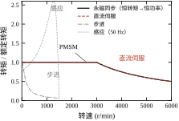
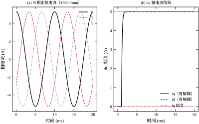
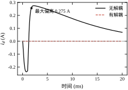
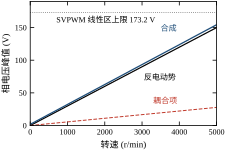
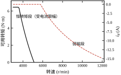
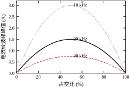
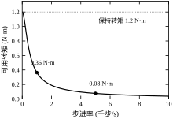
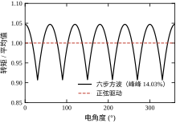
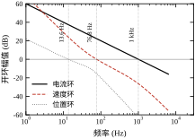
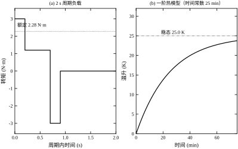

第 94 章把运动控制拆成“电流—速度—位置”三个环，重点在环与环之间的带宽分配。这一章把镜头推到最里面：电流环里流过的到底是什么，转矩是怎么从电流变出来的，为什么同样 5 A 电流在不同电机上给出完全不同的转矩，以及一台 750 W 的伺服电机从选型到整定要经过哪些定量判断。
本章的主线是一台 750 W 永磁同步伺服电机：4 对极、永磁磁链 0.0716 Wb、定子电阻 0.35 Ω、电感 2.5 mH、母线 300 V、开关频率 20 kHz。它的转矩常数 0.4296 N·m/A，额定电流 5.3 A 对应 2.277 N·m，3000 r/min 时输出 715 W。步进电机与感应电机作为对照，用同一套口径算，读者可以看清“为什么这台设备选伺服而不是步进”。
贴片机的 Z 轴要在 0.35 s 内完成“下降 50 mm—吸嘴吸取—抬起 50 mm—横移”的一整个节拍。下降段留给电机的时间约 0.12 s，行程 50 mm，按梯形速度规划，峰值速度约 0.5 m/s、加速度约 20 m/s²。丝杠导程 10 mm，0.5 m/s 对应 50 r/s，也就是 3000 r/min——正好是这台电机的额定转速。
负载 1.2 kg，加速力 1.2\times20=24 N，加上重力 11.8 N，合计 35.8 N。丝杠效率按 0.9 计，折算到丝杠的转矩是 35.8\times0.01/(2\pi\times0.9)=0.0633 N·m。丝杠自身惯量按 3\times10^{-5} kg·m² 估，角加速度 20/0.01\times2\pi=12566 rad/s²，需要 0.377 N·m。两项相加约 0.44 N·m，再留 1.5 倍余量，电机额定转矩要不低于 0.66 N·m。
按这个数，400 W 电机（额定 1.27 N·m）就够，为什么现场普遍用 750 W？因为还有三笔账没算：联轴器与抱闸的惯量、导轨摩擦在低速段的 Stribeck 峰、以及“节拍不能每次都跑满”的工程余量。三笔账加起来，实际选型往往比理论值大一档。这也是本章反复要讲的：选型算的是下限，装机选的是余量。
过程控制关心的是“一个慢变量稳定在设定值”，时间尺度是秒到小时；伺服控制关心的是“一个快变量精确跟随一条轨迹”，时间尺度是毫秒到微秒。两者的对象不同，评价指标也不同。
过程控制的典型指标是超调、调节时间、稳态误差；伺服还要多三项：跟随误差（运动中落后多少）、转矩脉动（电流里有没有周期性成分）、低速平稳性（1 r/min 时是否爬行）。后三项在阶跃响应里根本看不出来，却是产线上最先暴露的问题。一台伺服“阶跃很漂亮、低速一抖一抖”，多半是电流环的量化、死区或编码器分辨率在作怪，而不是位置增益没调好。
图 95-1 把四类电机的转矩—转速包络画在同一张图上，各自按额定转矩归一。

永磁同步电机（PMSM）在额定转速以下输出恒转矩，超过额定转速后进入恒功率区，转矩按 1/n 下降。这条“拐点”由母线电压决定：反电动势随转速上升，当它顶到逆变器能输出的上限，就没有余量再推电流了。本章电机的拐点在 3000 r/min 附近，靠弱磁还能把转速推到 12126 r/min，但转矩只剩零头。
直流伺服的结构最简单：励磁与电枢解耦，转矩正比于电枢电流，机械特性是一条略微下倾的直线。它在低速大转矩场合仍有一席之地，但电刷磨损、换向火花、转子惯量大三项缺点，让它在通用伺服市场基本被 PMSM 取代。
步进电机的特点是“开环也能定位”：驱动器按脉冲数走，不需要编码器。代价是转矩随步进率迅速下降，本章这台 1.8°、保持转矩 1.2 N·m 的步进电机，1000 步/s 时只剩 0.364 N·m（30.3%），5000 步/s 时只剩 0.076 N·m（6.4%）。它适合“低速、小惯量、成本敏感”的场合，比如 3D 打印机的送丝轴。
感应电机便宜、耐造、能高速，但转差让转速随负载变化，低速效率低，矢量控制又需要准确的转子参数。它在风机、泵类“平方转矩”负载上是主力，在需要精确位置的伺服轴上很少见。
四类电机的定性对比见表 95-1。这张表只看“方向”，不看“数值”；带数的版本在 §95.11.1（表 95-11），两者不要混用。
| 项目 | 直流伺服 | PMSM | 步进 | 感应 |
|---|---|---|---|---|
| 转矩密度 | 中 | 高 | 低 | 中 |
| 效率（额定点） | 75%–85% | 90%–95% | 40%–70% | 85%–92% |
| 低速平稳性 | 好 | 好（正弦驱动） | 差（有共振） | 中 |
| 需要编码器 | 是 | 是（或霍尔） | 否 | 是（矢量控制） |
| 控制复杂度 | 低 | 高（dq、弱磁） | 低 | 高（转子磁链观测） |
| 典型场合 | 老设备改造 | 通用伺服 | 低成本定位 | 风机、泵 |
一句话：伺服电机的控制，本质是把“要多少转矩”翻译成“给多少电流、加在哪个方向”。 直流电机只需要一个方向，PMSM 需要两个正交方向（d 与 q），步进电机需要按节拍切换方向，感应电机还要先算出转子磁链的方向。所有复杂的变换，都是为了把“方向”这件事说清楚。
本章路线与第 94 章一致：§95.2 写方程，§95.3 给选型与设计步骤，§95.4 在连续域把电流环、解耦、弱磁算清楚，§95.5 补离散与 PWM 的损失，§95.6 讨论稳定边界与转矩脉动，§95.7–§95.8 讲参数与整定，§95.9 给优化手段，§95.10 落地，§95.11 划边界，§95.12 交代码。
误解一：K_t 与 K_e 数值相等。 在 SI 单位下，直流电机确实有 K_t=K_e；但 PMSM 的转矩常数按 dq 峰值口径定义是 1.5p\lambda，反电动势常数按相电压峰值定义是 p\lambda，两者差 1.5 倍。本章的 0.4296 与 0.2864 就是这一对。若把铭牌上的 K_e（常以 V/krpm 线电压有效值给出）直接当 K_t 用，转矩会算错一倍以上。
误解二：电流环带宽越高越好。 电流环带宽受开关频率与计算延迟双重限制。20 kHz 开关、1 拍延迟时，1 kHz 电流环的相位裕度还有 62.89^\circ；开关降到 10 kHz，同样 1 kHz 带宽的裕度只剩 35.07^\circ，阶跃开始振铃。再往上提带宽，先撞到的是延迟，不是 PI 参数。
误解三：方波驱动与正弦驱动“差不多”。 反电动势为正弦的电机按六步方波供电，转矩峰峰脉动 14.03%（图 95-8）；正弦驱动在同工况下理论脉动为零。14% 的脉动在高速时被惯量滤掉，在低速时就是可见的抖动与噪声。用方波驱动正弦电机，省下的是算法，付出的是平稳性。
伺服系统里同时跑着四个数量级的时间尺度，搞清楚它们各自对应什么，比记住任何一个公式都有用。
最内层是开关周期。20 kHz 对应 50 μs，一个周期里桥臂要完成一次开通与关断，电流在上面叠出一个三角波。这一层不由控制算法决定，由功率器件决定。
第二层是电流环。带宽 1000 Hz 对应 1 ms 的时间常数，与开关周期差 20 倍。这一层决定了“电流指令变化后多久能跟上”，本章的上升时间是 0.350 ms。
第三层是速度环。带宽 76.78 Hz 对应 13.02 ms，与电流环差 13 倍。这一层决定“负载突变后多久能把速度拉回”，同时它也是机械谐振最容易落进来的频段。
第四层是位置环。带宽 13.55 Hz 对应 73.8 ms，闭环带宽 13.95 Hz 对应 71.7 ms。到这一层，时间尺度已经接近人的反应时间（约 100 ms），所以“机器动作看起来很快”这个感受，其实是位置环以下的几层在支撑。
四层的比值大致是 20、13、5.5，合起来从 50 μs 到 72 ms 跨了三个数量级。§95.3.4 要求的“相邻带宽比 5–10”，本质就是保证这四层不互相打架：比值太小，外层会感到内层的延迟；比值太大，外层慢得没有意义。而 0.35 s 的一整个节拍，是位置环周期的 4.7 倍——留给整定的余量，就藏在这个倍数里。
本章的符号统一如下，后文不再重复解释。
电机侧：p 是极对数（本章 4），\lambda 是永磁磁链（0.0716 Wb），R 是定子相电阻（0.35 Ω），L_d、L_q 是 dq 轴电感（各 2.5 mH），J 是转子加负载的等效惯量（1.5\times10^{-4} kg·m²），B 是粘性阻尼（3\times10^{-4} N·m·s/rad）。
转速有两种：机械角速度 \omega_m（rad/s）与电角速度 \omega_e=p\omega_m。本章 p=4，所以 3000 r/min（314.16 rad/s）对应 \omega_e=1256.6 rad/s，也就是 200 Hz 的电频率。这个 4 倍关系贯穿全章：反电动势、耦合项、弱磁点都按 \omega_e 算，而惯量、转矩、位置都按 \omega_m 算，混用是本章最容易犯的错。
电流电压都是“峰值”口径：i_d、i_q 是 dq 轴电流峰值，v_d、v_q 是相电压峰值，额定 5.3 A、峰值 15 A 都是指单相电流的峰值，不是有效值。转矩式 (95-8) 里的 3/2 正是为这个口径准备的。
时间一律用秒，频率用赫兹，角频率用 rad/s。带宽与时间常数的换算是 f=1/(2\pi\tau)，不是 f=1/\tau——这一条在写代码时最容易漏掉 2\pi，本章脚本里所有 bandwidth_hz() 都显式除了 2\pi。
现场偶尔能看到一种省钱的尝试：拿一台通用变频器（V/f 控制）去带永磁同步电机，省掉伺服驱动器与编码器。它通常能转起来，但一加载就失步，一低速就抖，最后被判定为“电机不行”。
原因可以逐条对上本章的方程。V/f 控制不测转子位置，所以 Park 变换无从谈起，定子电流的方向是“猜”的；猜错 90^\circ，i_d 与 i_q 就互换，转矩变成零，电流全用来发热。它也没有电流环，i_q 不受控，负载一变电流就冲到限流点。低速时反电动势只有几伏，V/f 给的电压误差（含死区 12 V）比反电动势还大，转子根本跟不上旋转磁场。
三处失效分别对应 §95.2.2（没有角度）、§95.4.1（没有电流环）、§95.6.3（死区淹没反电动势）。这也反过来说明伺服驱动器贵在哪：贵在它把“角度、电流、电压”三件事都做成了闭环，而不是贵在功率器件。
直流电机是理解一切伺服电机的起点，因为它的“方向”问题天然不存在：励磁磁场由定子（或永磁体）固定，电枢电流的方向就是转矩的方向，大小就是转矩的大小。它的动态只有三条方程。
电枢回路的电压平衡：
v_a=R_a i_a+L_a\frac{\mathrm{d}i_a}{\mathrm{d}t}+e,\qquad e=K_e\omega_m \tag{95-1}
电磁转矩与电流成正比：
T_e=K_t i_a \tag{95-2}
机械轴上的力矩平衡：
J\frac{\mathrm{d}\omega_m}{\mathrm{d}t}=T_e-T_L-B\omega_m \tag{95-3}
把 (95-1)(95-2) 代入 (95-3)，消去 i_a，得到电枢电压到转速的传递函数：
\frac{\Omega_m(s)}{V_a(s)}=\frac{K_t}{(L_a s+R_a)(Js+B)+K_tK_e} \tag{95-4}
这个式子里藏着伺服控制最重要的一个事实：分母中的 K_tK_e 是“电气—机械”耦合项，它把两条时间尺度完全不同的回路绑在一起。电气时间常数 L_a/R_a 通常在毫秒量级，机械时间常数 J/B 通常在百毫秒到秒量级，两者差两个数量级以上。本章 PMSM 的 d 轴回路 L/R=2.5\times10^{-3}/0.35=7.143 ms（对应 22.3 Hz），而 J/B=1.5\times10^{-4}/3\times10^{-4}=0.5 s，相差整整 70 倍。正因为有这 70 倍，才能把电流环与速度环分开设计、分开整定，第 94 章讲的“10 倍带宽分离”才有物理依据。若两者的时间常数接近（例如空心杯电机配极小惯量负载），三环就必须联立设计。
在 SI 单位制下，(95-1) 与 (95-2) 中的 K_t 与 K_e 数值相等，这不是巧合：两者都由同一份磁通与同一个几何尺寸决定，量纲上 K_t 是 N·m/A、K_e 是 V·s/rad，而 N·m/A = V·s/rad。这条等式只对直流电机成立；一旦进入三相世界，K_t 与 K_e 之间会多出一个由变换口径决定的系数，§95.2.3 专门讲这件事。
PMSM 定子上有三套绕组，互差 120^\circ。三相电流在空间上合成一个旋转的电流矢量，转矩由这个矢量与转子磁场的夹角决定。直接在三相坐标里控制，要同时处理三个互相耦合、且随时间正弦变化的量，非常别扭。两步变换把这件事化简。
第一步是 Clarke 变换，把三相压成两相静止坐标 \alpha\beta。采用幅值不变口径（三相正弦的峰值等于 \alpha\beta 分量的峰值）：
i_\alpha=\frac{2}{3}\left(i_a-\frac{1}{2}i_b-\frac{1}{2}i_c\right),\qquad i_\beta=\frac{2}{3}\cdot\frac{\sqrt{3}}{2}\left(i_b-i_c\right) \tag{95-5}
第二步是 Park 变换，把静止坐标 \alpha\beta 转到跟着转子一起转的 dq 坐标，转角用转子电角度 \theta_e：
i_d=i_\alpha\cos\theta_e+i_\beta\sin\theta_e,\qquad i_q=-i_\alpha\sin\theta_e+i_\beta\cos\theta_e \tag{95-6}
这两步的意义不在数学，而在物理：在跟着转子转的坐标系里，原本正弦变化的三相电流变成了两个直流量。 i_d 沿转子磁链方向，i_q 垂直于它。直流量可以用 PI 调节到零稳态误差，正弦量不行。整个矢量控制体系，就是为了把“控制正弦”换成“控制直流”这一件事。
口径要交代清楚。式 (95-5) 前面的 2/3 是幅值不变变换，功率不守恒，实际功率要乘 3/2；如果改用功率不变变换（系数 \sqrt{2/3}），转矩式里的 3/2 就消失，但电流的物理含义变成有效值。两套口径都对，混用就错。本章统一用幅值不变口径：所有电流都是相电流峰值，额定 5.3 A、峰值 15 A 都是峰值，转矩式里保留 3/2。
在 dq 坐标下，PMSM 的电压方程是：
v_d=Ri_d+L_d\frac{\mathrm{d}i_d}{\mathrm{d}t}-\omega_eL_qi_q,\qquad v_q=Ri_q+L_q\frac{\mathrm{d}i_q}{\mathrm{d}t}+\omega_e\left(L_di_d+\lambda\right) \tag{95-7}
其中 \omega_e=p\omega_m 是电角频率，p 是极对数，\lambda 是永磁磁链。式 (95-7) 里有两个“多余”的项：-\omega_eL_qi_q 和 +\omega_eL_di_d，它们不含微分、只与当前工作点有关，是坐标旋转带来的耦合。第三项 \omega_e\lambda 是反电动势，随转速线性增长，它才是限制最高转速的元凶。
转矩方程：
T_e=\frac{3}{2}p\left[\lambda i_q+\left(L_d-L_q\right)i_di_q\right] \tag{95-8}
本章电机是表贴式，L_d=L_q=2.5 mH，方括号里第二项为零，转矩只由 i_q 决定：
T_e=K_t i_q,\qquad K_t=\frac{3}{2}p\lambda \tag{95-9}
代入铭牌数值，K_t=1.5\times4\times0.0716=0.4296 N·m/A。额定电流 5.3 A 给出 2.277 N·m，乘 3000 r/min 得 715 W，与 750 W 铭牌对上（差额是效率与裕量）。
反电动势常数按相电压峰值定义：
K_e=p\lambda \tag{95-10}
数值是 4\times0.0716=0.2864 V·s/rad，3000 r/min 时 0.2864\times314.16=89.975 V。把 (95-9) 与 (95-10) 相除：
\frac{K_t}{K_e}=\frac{1.5p\lambda}{p\lambda}=1.5 \tag{95-11}
这就是 §95.1.5 第一个误解的根源。多出来的 1.5 不是误差，是幅值不变 Clarke 变换的 2/3 与三相功率的 3/2 相抵后剩下来的系数。工程上还有第三套口径：铭牌常给 K_e 的单位是 V/krpm，且按线电压有效值标注，折算关系是 K_e^{(\text{铭牌})}=\sqrt{3/2}\cdot p\lambda\cdot(2\pi/60)\times1000\approx36.7 V/krpm。
同一个常数，三套口径分别是 0.2864 V·s/rad、36.7 V/krpm、0.4296 N·m/A，最大与最小相差 85 倍。选型时若拿铭牌的 36.7 直接当 K_t 代进 T=K_ti，算出的转矩会大两个数量级，电机“选小”、上机就过流。先问口径，再代公式，这是伺服选型的第一条纪律。
逆变器能输出的电压有上限。SVPWM 线性区的相电压峰值上限是母线电压除以 \sqrt3：
V_{\max}=\frac{V_{dc}}{\sqrt3}=\frac{300}{\sqrt3}=173.205\ \text{V} \tag{95-12}
把 (95-7) 的稳态形式（微分项为零）代入这个上限，得到电压约束：
\left(Ri_d-\omega_eL_qi_q\right)^2+\left(Ri_q+\omega_e\left(L_di_d+\lambda\right)\right)^2\le V_{\max}^2 \tag{95-13}
忽略电阻压降（高速时它只占百分之几），(95-13) 退化成 dq 平面上的一个圆：
\left(L_qi_q\right)^2+\left(L_di_d+\lambda\right)^2\le\left(\frac{V_{\max}}{\omega_e}\right)^2 \tag{95-14}
把 L_di_d 与 L_qi_q 当作横纵坐标，式 (95-14) 就是一个圆：圆心在 (-\lambda,\,0)，半径是 V_{\max}/\omega_e。转速升高，半径按 1/\omega_e 收缩，圆整体缩小；i_q 能取的值越来越小，这就是恒功率区的来历。工程整定时为了留裕量，常把两个分量按幅值直接相加，用更保守的标量式代替 (95-14)：
\omega_e\left(L_qi_q\right)+\omega_e\left|\lambda+L_di_d\right|\le V_{\max} \tag{95-15}
本章脚本采用的就是这一式，它比圆公式悲观一成多，正好对应逆变器的死区、管压降与母线跌落。
另一条约束来自电流本身，绕组温升与驱动器容量决定了电流矢量的模有上限：
i_d^2+i_q^2\le I_{\max}^2 \tag{95-16}
本章 I_{\max}=15 A（峰值）。两条约束一联立，工作点就被夹在“电压圆”与“电流圆”的交集里。不弱磁（i_d=0）时，把 i_q=5.3 A 代入 (95-15) 解出基速 4873 r/min；超过这个转速还想出力，唯一的办法是让 i_d 取负值，把 \lambda+L_di_d 压低，替反电动势“腾地方”。这就是弱磁。
弱磁能做多深，取决于特征电流 \lambda/L_d：
i_{d,\text{char}}=\frac{\lambda}{L_d}=\frac{0.0716}{2.5\times10^{-3}}=28.64\ \text{A} \tag{95-17}
特征电流 28.64 A 大于驱动器峰值 15 A，意味着这台电机拿不出足够的 i_d 把磁链完全抵消，最高转速一定有限。把 i_d=-15 A 代入 (95-15)，得 12126 r/min，此时 i_q 已被压到只剩零头，转矩不足额定的 1%。若换一台 L_d 更小的电机（特征电流 40 A 以上），可用弱磁深度会更浅；反之 L_d 大的内置式电机弱磁能力强，这也是内置式 PMSM 在宽调速场合更受欢迎的原因之一。
步进电机没有转子位置反馈，转矩由“电流建立得快不快”决定。每相是 RL 回路，换相时电流按 1-e^{-t/\tau} 上升，\tau=L/R。步进率越高，留给电流建立的时间越短，实际电流越小，转矩越低。一阶近似下矩频特性是：
T(f_e)=\frac{T_0}{\sqrt{1+\left(2\pi f_e L/R\right)^2}} \tag{95-18}
式中 f_e 是单相电流的交变频率，不是脉冲频率。两相步进电机一个整步对应四分之一电周期，f_e=f_{\text{step}}/4。
本章步进电机 T_0=1.2 N·m、L=3 mH、R=1.5 Ω，时间常数 2 ms。200 步/s（f_e=50 Hz）时还有 84.7% 的保持转矩，1000 步/s（250 Hz）掉到 30.3%（0.364 N·m），5000 步/s 只剩 6.4%。这条曲线解释了为什么步进电机“低速有劲、高速没劲”，也解释了细分驱动为什么能改善低速平稳性却不能提高高速转矩——细分只改变电流波形的台阶，不改变 RL 回路的时间常数。
感应电机的转矩—转差关系用 Kloss 公式描述：
T(s)=\frac{2T_{\max}}{s/s_m+s_m/s} \tag{95-19}
其中 s_m 是最大转矩对应的转差。本章 1.5 kW、4 极、50 Hz 的电机同步转速 1500 r/min，T_{\max}=2.6 p.u.，s_m=0.15；额定点 s=0.03，代入得 T=1.000 p.u.、转速 1455 r/min。转差是感应电机的“身份证”：转矩必须靠转差产生，转速就必然随负载漂移，开环无法定位。矢量控制通过观测转子磁链、把定子电流分解成励磁分量与转矩分量，才能在动态上模拟直流电机；代价是需要准确的转子电阻（它随温度漂移，直接决定磁链观测的精度）。
无刷直流（BLDC）与 PMSM 在结构上是同一类东西：永磁转子、三相定子、电子换向。区别只在反电动势的波形——BLDC 用集中绕组，反电动势做成梯形；PMSM 用分布绕组，反电动势做成正弦。波形决定了驱动方式：梯形配方波，正弦配正弦。
六步换相时，任一时刻只有两相串联导通，第三相悬空，每个电周期换相六次。把导通两相的电压方程相加：
v_{ab}=2Ri+2L\frac{\mathrm{d}i}{\mathrm{d}t}+\left(e_a-e_b\right) \tag{95-20}
梯形反电动势在 120^\circ 导通区间内近似恒定，e_a-e_b 也恒定，所以电流在恒定电压下按指数建立，转矩平台是平的。这是 BLDC 的理论优势：不需要 Park 变换、不需要高分辨率编码器，霍尔信号的六个扇区就够，驱动器成本可以明显压低。
但“梯形配方波”是配套条件。把方波电流加在正弦反电动势的电机上（现场常见的“用 BLDC 驱动器带 PMSM”），转矩不再恒定：逐电角度取三相反电动势的极差、按 \omega_ep\lambda 归一，得到最小值 1.5000、最大值 1.7321、平均值 1.6540，峰峰脉动 14.03%（图 95-8）。这个数字接近理论值 2-\sqrt3=13.4\%，量级完全对得上。反过来把正弦电流加在梯形反电动势的电机上，脉动同样存在，只是形状不同。驱动波形必须与反电动势波形匹配，这条约束比任何算法优化都硬。
五类电机的模型与“方向”来源可以并成表 95-2。
| 电机 | 核心方程 | 转矩由什么决定 | “方向”从哪来 |
|---|---|---|---|
| 直流伺服 | (95-1)–(95-3) | 电枢电流 | 电刷与换向器机械给定 |
| PMSM | (95-7)(95-8) | i_q（表贴式） | 编码器测角 + Park 变换 |
| BLDC | (95-20) | 导通两相的电流 | 霍尔信号的六个扇区 |
| 步进 | (95-18) | 绕组电流的建立程度 | 脉冲序列开环给定 |
| 感应 | (95-19) | 转差与磁链 | 转子磁链观测器 |
五条路径里，只有 PMSM 把“方向”显式地变成一个可测、可控的坐标角。直流伺服不需要方向，电刷替它做了决定；BLDC 的方向被霍尔信号量化成六个 60^\circ 的扇区，扇区边界上必然有一次转矩跳变；步进电机的方向是开环假设，丢步了也不知道；感应电机的方向靠观测器估计，转子电阻一漂，估计角就跟着偏。只有 PMSM 的方向是“测出来再转过去”，误差可以做到编码器分辨率量级——本章 18 位编码器对应 2\times10^{-5} rad，折算到 10 mm 导程的丝杠上是 0.032 μm。
这也解释了本章的篇幅分配：PMSM 占七成，其余四类作为对照。把 PMSM 的电流环、解耦、弱磁、三环整定讲透，换到另外几类电机上，只需替换对象模型与“方向”的获取方式，控制器的骨架不变。
式 (95-21) 只把负载折成了转动惯量，实际的轴系还有丝杠、联轴器、抱闸。三者加起来才是电机真正要推的惯量，而它们之间的弹性又决定了系统能跑多快。
先算折算。§95.1.1 的 Z 轴，负载 1.2 kg，导程 10 mm：
J_L=m\left(\frac{p}{2\pi}\right)^2=1.2\times\left(\frac{0.01}{6.2832}\right)^2=3.04\times10^{-6}\ \text{kg·m}^2
这个数只有电机转子惯量（1.5\times10^{-4}）的 2%，比丝杠自身的 3\times10^{-5} 还小一个数量级。所以“负载很重”这种直觉在丝杠传动上经常是错的：10 mm 导程把直线运动“放大”了 628 倍再平方，1.2 kg 折过来只剩几克·平方米的量级。惯量真正的大头是丝杠、联轴器与抱闸，它们直接坐在轴上，不打折扣。
再算谐振。把传动链看成“电机惯量 J_m 经过刚度 K 连到负载惯量 J_L”的二质量系统，反谐振频率是
f_n=\frac{1}{2\pi}\sqrt{\frac{K\left(J_m+J_L\right)}{J_mJ_L}}
本章 J_m=1.5\times10^{-4}、J_L=3.3\times10^{-5}（丝杠加负载），若 f_n=300 Hz，反推刚度 K=96 N·m/rad。这个量级对滚珠丝杠是合理的：丝杠直径 16 mm、长度 300 mm 的扭转刚度大约在 100 N·m/rad 上下。
300 Hz 对三环意味着什么？位置环 13.55 Hz、速度环 76.78 Hz，都远低于它，所以 §95.3 的设计按刚体做没有问题。但如果换成同步带，刚度掉一个数量级到 9.6 N·m/rad，f_n 就落到 95 Hz，与速度环 76.78 Hz 只差 1.24 倍，速度环的相位裕度会被谐振峰直接吃掉，表现为“一加速就啸叫”。这时候只有两条路：加陷波器把 95 Hz 挖掉，或把速度环压到 30 Hz 以下。
式 (95-7) 假设 L_d、L_q 是常数。真实电机的电感随电流变化：硅钢片在 15 A 时的磁导率可能只有 5 A 时的七成，等效电感跟着掉 20%–30%。
这个变化对电流环的影响是“变快”而不是“变慢”。对象极点 R/L 从 0.35/2.5\times10^{-3}=140 rad/s 移到 0.35/1.75\times10^{-3}=200 rad/s，而 PI 零点还固定在 140 rad/s。零点不再精确对消极点，闭环里留下一个小的时间常数，阶跃响应会出现一点点过冲——但穿越频率在 6283 rad/s，离这两个极点都远，相位裕度的变化不到 1°。
真正麻烦的是大电流下的转矩标定。若控制器按 L=2.5 mH 算弱磁量，而实际电感只有 1.75 mH，同样的 i_d 产生的去磁效果只有预期的七成，弱磁点会偏高，高速段提前进入电压饱和。这类误差不能靠调增益补，只能做电感随电流的查表（第 94 章 §94.7 有标定方法）。
本章的时域仿真用常数电感，是因为工作点固定在额定附近；一旦要研究 15 A 峰值下的动态，就必须把 L(i) 加进去。
把式 (95-7)(95-8) 与机械方程画成框图，会发现整条链路只有三个储能元件，而这正是三个环的物理依据。
第一个是电感。L\frac{\mathrm{d}i}{\mathrm{d}t}=v-Ri-\omega_e(\cdots)，电感储的是磁能，状态量是电流。控制它的是电压，所以最内层是电流环，执行器是 PWM。
第二个是转动惯量。J\frac{\mathrm{d}\omega_m}{\mathrm{d}t}=T_e-T_L-B\omega_m，惯量储的是动能，状态量是转速。控制它的是转矩（也就是 i_q），所以中间层是速度环，执行器是电流环。
第三个是位置本身。\frac{\mathrm{d}\theta}{\mathrm{d}t}=\omega_m，位置不是“储能”，而是一个纯积分，它没有自己的时间常数，只跟着速度走。控制它的是速度，所以最外层是位置环，执行器是速度环。
三个储能元件串成一条链，每个都有自己的时间尺度：电感 7.143 ms、惯量 0.5 s、积分无穷。三环的带宽 1 kHz、76.78 Hz、13.55 Hz，就是照着这三个尺度排的。反过来，若一台电机的 L/R 与 J/B 只差 3 倍（空心杯电机配大惯量负载就是这种情况），三个尺度挤在一起，三环分离的近似失效，必须联立设计——那时就不是“三环”而是“一个三阶系统”了。
框图还解释了为什么电流环是唯一能“算出来”的：它的对象是一阶 RL，极点与零点可以直接对消；速度环的对象是“电流环闭环 × 一阶机械”，多了一个惯性；位置环的对象是“速度环闭环 × 积分”，多了一个 90^\circ 相位。每往外一层，对象的阶数加一，可用的相位就少 90^\circ，这就是位置环只能用 P、速度环只能用 PI 的根本原因。
伺服系统的设计可以拆成五步：定转矩与转速、定母线电压、定开关频率、定三环带宽、算增益并复核。每一步的输出是下一步的输入，顺序不能颠倒。现场最常见的错误是从最后一步开始——先把增益调上去，调不好再换电机，结果两头都改、两头都不对。
负载给的是力、质量、行程、节拍，电机要的是转矩、惯量、转速、RMS 转矩。前两个有闭式折算公式：
T_L=\frac{F\,p}{2\pi\eta},\qquad J_L=m\left(\frac{p}{2\pi}\right)^2 \tag{95-21}
其中 F 是折算到丝杠的轴向力，p 是导程，\eta 是传动效率。§95.1.1 的 Z 轴算出 T_L=0.0633 N·m、J_L=3\times10^{-5} kg·m²，加上加速转矩 0.377 N·m，合计 0.44 N·m，再乘 1.5 倍余量得 0.66 N·m。这是“最小值”，不是“选型值”。
惯量匹配单独看。本章电机转子惯量 1.5\times10^{-4} kg·m²，负载 0.2 倍，属于很轻的配置；若负载惯量超过电机 10 倍，速度环剪切频率会从 76.78 Hz 掉到二十几赫兹（第 94 章 §94.6 有完整的扫描），这时要么换大惯量电机，要么加减速机。
转矩还要按 RMS 校验，不能按峰值。周期负载的等效转矩：
T_{\text{rms}}=\sqrt{\frac{1}{T}\sum_k T_k^2\,\Delta t_k} \tag{95-22}
本章 2 s 节拍的负载算出 T_{\text{rms}}=1.470 N·m，是额定的 64.5%，对应稳态温升 25.0 K（一阶热模型，满负荷 60 K）。若按峰值 1.32 倍额定去选一台“刚好够”的电机，峰值不超，但温升会到 60\times1.32^2\approx104.5 K，直接顶到 F 级绝缘的允许温升（约 105 K）边缘。选型看 RMS，峰值只用来校验驱动器电流与磁饱和。
驱动器按峰值电流选。本章电机额定 5.3 A、峰值 15 A，倍率 15/5.3=2.83。通用伺服驱动器的过载规格通常是 3 倍额定持续 3 s，正好覆盖“0.12 s 加速段用满峰值、其余时间回落到额定”这种占空比。若把峰值电流标到 4 倍以上，驱动器体积与成本上一个台阶，而加速段其实用不到——这是“电机选大一号、驱动器选小一号”在成本上更划算的原因。
母线电压由最高转速处的反电动势决定。稳态下 dq 电压的模就是逆变器必须输出的相电压峰值：
V_{dc}\ge\sqrt3\,\sqrt{\left(\omega_eL_qi_q\right)^2+\left[\omega_e\left(L_di_d+\lambda\right)+Ri_q\right]^2} \tag{95-23}
本章 4500 r/min 时根号内的合成电压是 139.079 V，乘 \sqrt3 是 240.9 V，所以 300 V 母线够用；若最高转速只要 3000 r/min，只需 161.6 V，200 V 母线也能凑合。
但“够用”不等于“好用”，要看调制比留了多少余量。300 V 母线、V_{\max}=173.205 V 时，3000 r/min 的调制比是 0.539，4500 r/min 是 0.803，4800 r/min 是 0.856。经验上把 0.85 当作连续工作的上限：超过它，SVPWM 开始丢脉冲，电流谐波与转矩脉动同时上升，电流环的相位裕度也会被“电压饱和”这件事悄悄吃掉。所以这台电机的连续工作区标在 3000 r/min、短时到 4500 r/min，与铭牌一致。
反过来算：若母线选 200 V，上限只有 115.5 V，3000 r/min 的 93.3 V 已占八成，4500 r/min 的 139.1 V 根本出不来。母线不是“选大了浪费”，它是给加速段的反电动势与电网跌落留的余量。
开关频率受两条相反的约束：纹波要小，延迟也要小。PWM 一个周期内的电流纹波峰峰值是
\Delta i=\frac{V_{dc}D\left(1-D\right)}{Lf_{\text{pwm}}} \tag{95-24}
D 是占空比，在 0.5 处取最大。20 kHz、D=0.5 时 \Delta i=1.500 A，是额定 5.3 A 的 28.3%；占空比降到 0.25 或 0.75 时降到 1.125 A（21.2%），0.1 与 0.9 时只有 0.540 A（10.2%）。开关频率翻到 40 kHz，全部减半。
延迟这一侧正相反。数字电流环有一个采样保持加一拍计算延迟，开关频率越低，这一拍占的时间越长、相位损失越大：20 kHz 时 1 kHz 电流环的相位裕度 62.89°，10 kHz 时只剩 35.07°，40 kHz 时升到 76.49%。两条约束一夹，20 kHz 是这台 750 W 驱动器的合理点：纹波 28.3% 在 30% 的经验线内，裕度 62.89° 也够。
电流环带宽按开关频率的 1/20 取，即 1 kHz。这个比例不是拍脑袋：再往上提，延迟造成的相位损失会让 PI 无论怎么整都超调；再往下压，速度环的可用带宽被拖低，位置环就更慢。
带宽链从内到外是 1000 Hz、76.78 Hz、13.55 Hz，相邻比值 9.05 与 7.93，都落在 5–10 的区间里。这个比例关系不是设计出来的美观，而是“外环把内环当成 1”这个近似成立的条件：内环比外环快 10 倍时，它在穿越频率处的相位滞后不到 6^\circ，外环可以按一阶对象整定；只快 3 倍时，滞后接近 20^\circ，外环的裕度会被内环吃掉一半。
电流环用零极点对消，把 PI 的零点放在对象极点 R/L 上：
K_{pi}=L\omega_c,\qquad K_{ii}=R\omega_c \tag{95-25}
代入 L=2.5 mH、R=0.35 Ω、\omega_c=2\pi\times1000，得 K_{pi}=15.7080 V/A、K_{ii}=2199.11 V/(A·s)。对消之后，开环变成纯积分，闭环是一阶惯性，相位裕度 90.00°，带宽 1001.62 Hz，阶跃超调 0.00%，上升时间 0.350 ms、调节时间 0.623 ms。这是三环里唯一能做到“理论无超调”的一环，也是唯一能把参数直接算出来、不必试凑的一环。
速度环 PI 取 K_{p\omega}=0.15 A·s/rad、T_i=4 ms，零点在 39.8 Hz，剪切频率 76.78 Hz，相位裕度 58.45°，闭环带宽 110.65 Hz。速度环比电流环少 30° 裕度，原因是积分器本身贡献 -90^\circ，而零点只能补回一部分；这 58.45° 是“速度环要抑制静差”必须付的代价。
位置环只用比例，K_{p\theta}=80 s⁻¹。开环在 13.55 Hz 穿越，相位裕度 88.71°，增益裕度 30.61 dB，闭环带宽 13.95 Hz。位置阶跃的超调 0.00%、上升时间 26.15 ms、调节时间 50.41 ms。位置环之所以敢只用 P，是因为速度环已经把对象“驯服”成一阶：位置环看到的是一个积分器，P 控制天然稳定，加 I 反而会把相位裕度吃光。
设计算完不等于设计完成，还要逐项复核。表 95-3 是本章用的清单，十一项，每项都有判据与本章取值。
| 检查项 | 判据 | 本章取值 |
|---|---|---|
| 常用工况调制比 | \le0.85 | 0.539（3000 r/min） |
| 短时调制比 | \le0.95 | 0.803（4500 r/min） |
| 电流纹波 | \le30\% 额定 | 28.3% |
| 电流环相位裕度 | \ge45^\circ | 62.89° |
| 速度环相位裕度 | \ge45^\circ | 58.45° |
| 位置环相位裕度 | \ge60^\circ | 88.71° |
| 位置环增益裕度 | \ge10 dB | 30.61 dB |
| 相邻带宽比 | 5–10 | 9.05 / 7.93 |
| 负载惯量比 | \le5 | 0.2 |
| 编码器分辨率 | \le 定位精度的 1/3 | 2\times10^{-5} rad |
| RMS 温升 | \le 绝缘允许 | 25.0 K |
表 95-3 里最容易漏的是第一项与最后一项。调制比不够时，现象是“高速带不动”，调增益没用；温升超标时，现象是“跑两小时就报警”，看阶跃响应一切正常。两项都只能在设计阶段算出来，装机之后才发现，代价就是返工。
编码器那一行值得单独算一遍，因为它常被当成“越高越好”。按 5 μm 的定位精度、1/3 的判据，编码器折算到直线只要 1.67 μm，对应 1.05\times10^{-3} rad——13 位就够了。本章选 18 位（2\times10^{-5} rad），比精度要求细 50 倍，多出来的分辨率不是为定位，是为低速测速：1 r/min 时，1 ms 采样周期内位置只走 5.2 个脉冲，已接近“数得清”的下限；降到 0.1 r/min 就只剩 0.5 个脉冲，速度估计开始一跳一跳。低速爬行、转矩脉动这些现象，根子常在这里，而不是 PID 没调好。
清单过完，设计闭环。但清单只能保证“没有明显错误”，不能保证“性能最优”：为什么速度环不取 100 Hz、位置环不取 20 Hz，为什么弱磁要提前介入，这些取舍要在 §95.4 的连续域分析里才看得清。
把五步连起来走一遍，看每一步的数字怎么传到下一步。题目就是 §95.1.1 的贴片机 Z 轴：负载 1.2 kg、导程 10 mm、行程 50 mm、定位精度 5 μm。
第一步，算峰值。 加速段需要的转矩 0.377 N·m，加上重力与摩擦折算的 0.0633 N·m，合计 0.440 N·m；乘 1.5 倍余量，峰值需求 0.66 N·m。
第二步，算连续。 峰值只决定“能不能动”，连续才决定“能跑多久”。按 2 s 一个完整循环（加速 0.2 s、匀速 0.5 s、减速 0.2 s、停顿 1.1 s），峰值 3.0 N·m、匀速 1.2 N·m，代入式 (95-22) 得 T_{\text{rms}}=1.470 N·m。
第三步，定额定转矩。 温升按式 (95-34) 的平方关系，若要求长期温升不超过额定值的 80%，额定转矩要不低于 1.470/0.8=1.84 N·m。750 W 电机的 2.277 N·m 满足，400 W 的 1.27 N·m 不满足。
第四步，反证。 假设只看峰值去选 400 W 电机：峰值 3.0 N·m 靠 2.4 倍过载能顶住，但 RMS 1.470 落在 1.27 N·m 的额定之上，温升按 60\times(1.470/1.27)^2=80.4 K 走，比本章设计值 25.0 K 高两倍多。跑两小时就会触到过热报警。这就是 §95.3.1 那句“选型看 RMS”的代价：选错不会立刻坏，会在第二个小时坏。
第五步，校验其余四项。 转速：3000 r/min 恰好是额定，调制比 0.539；峰值电流：3.0 N·m 只需 6.98 A，占 15 A 的一半不到；惯量比：3.3\times10^{-5}/1.5\times10^{-4}=0.22；编码器：18 位对应 0.032 μm，远细于 5 μm 的要求。
五个数（0.66、1.470、1.84、2.277、0.539）串起来，就是这台设备选 750 W 的完整理由。读者若把负载换成 6 kg，只有第一步的 0.0633 与第二步的 RMS 会变，后面的逻辑不变——这正是本章把设计拆成五步而不是给一张经验表的原因。
算例里还有一个隐含判断：为什么用 K_t=0.4296 而不是铭牌上的 K_e？ 因为转矩式用的是 dq 峰值口径。若误用 0.2864，同样的 2.277 N·m 会被算成 7.95 A，电机凭空“变小”三分之一，选型直接错一档。这是 §95.2.3 那三套口径在工程上第一次咬人的地方。
设计里出现了三个“不刚好”的数：转矩乘 1.5、调制比留到 0.85、温升只用 80%。三个数都不是拍脑袋，各自对应一种不确定性。
转矩的 1.5 倍对应摩擦的不确定。导轨的 Stribeck 峰在低速段可以到额定摩擦的两三倍，润滑状态变化又会让它漂；再加上电压跌落时转矩会掉（T\propto i_q，而 i_q 受电压限制），1.5 倍是最低的保险。§95.1.1 里“理论 0.66 N·m、实际选 2.277 N·m”的差距，主因不是这个 1.5，而是下面两条。
调制比的 0.85 对应电网波动。300 V 母线若跌 10% 到 270 V，线性区上限从 173.205 V 降到 155.88 V，4500 r/min 需要的 139.079 V 立刻占到 0.892，越过 0.85 的线。留 15% 的余量，本质是给电网留的。若不留，电网一跌，高速段就先丢转矩。
温升的 80% 对应环境温度与老化。额定温升 60 K、环境 40 ℃，绕组就是 100 ℃，已经贴着 F 级绝缘的 105 ℃ 长期允许点。取 80% 的 RMS，温升 38.4 K，绕组 78.4 ℃，留出 20 多度给夏季高温、电柜积灰、以及 §95.11.5 说的磁钢失磁。
三处余量加起来，让这台电机在纸面上“看起来选大了”：额定 2.277 N·m 只用到 1.470，母线 300 V 只用到 240.9 V，温升只到 25 K。这不是浪费，是把不确定性换成了确定的余量。设计的功夫不在算得准，而在知道哪里算不准。
先把离散、饱和、死区统统拿掉，看连续域里三环各自长什么样。这一节用 ch095_sim.py 的 [1][2][3][5][7] 五组输出，每组数都能在脚本里找到出处。
解耦之后，d 轴与 q 轴的方程 (95-7) 变成两个完全相同的一阶回路：
L\frac{\mathrm{d}i_d}{\mathrm{d}t}+Ri_d=v_d',\qquad L\frac{\mathrm{d}i_q}{\mathrm{d}t}+Ri_q=v_q' \tag{95-26}
对象是 1/(Ls+R)，极点 R/L=140 rad/s，即 22.3 Hz。PI 的零点正好放在这个极点上（式 95-25），对消后开环只剩一个积分器 K_{pi}/(Ls)，闭环是一阶惯性，时间常数 L/K_{pi}=1/\omega_c=0.159 ms。电气时间常数 7.143 ms 与闭环时间常数 0.159 ms 相差 45 倍——电流环做的事情，就是把一个 22 Hz 的对象“压”成 1 kHz。
一阶闭环没有超调，这是理论保证，不是调出来的。阶跃读数：超调 0.00%、上升时间 0.350 ms、调节时间 0.623 ms。三个数里只有上升时间与 \omega_c 直接相关，t_r\approx2.2/\omega_c=0.350 ms，与读数完全一致。
图 95-2 给出两个视角。左图是三相电流，三条正弦互差 120^\circ，看上去很“交流”；右图是同一组数据经 Park 变换后的 i_d、i_q，i_d 贴在零线上，i_q 从 0 阶跃到 5 A 后保持平直。同一件事，在 abc 坐标里是三条曲线，在 dq 坐标里是两条直线——这就是 §95.2.2 那句“把控制正弦换成控制直流”的图示。

式 (95-7) 里那两个不含微分的项，量级随转速线性增长。R i_q=1.855 V 是常数，耦合项 \omega_eL_qi_q 在 1000 r/min 时 5.550 V（3 倍），3000 r/min 时 16.650 V（9 倍），4800 r/min 时 26.641 V（14.4 倍）。也就是说，中高速时 d 轴回路里最大的“输入”不是自己的电压，而是 q 轴电流；q 轴回路里最大的输入不是自己的电压，而是反电动势加 d 轴电流。
前馈就是把这几个已知量算出来、直接加到电压指令上：
v_d^{*}=v_d^{\text{PI}}-\omega_eL_qi_q,\qquad v_q^{*}=v_q^{\text{PI}}+\omega_e\left(L_di_d+\lambda\right) \tag{95-27}
图 95-3 对比了加与不加的效果。1500 r/min 时给 i_q 一个 5 A 阶跃：不加解耦，i_d 被拽出最大 0.2750 A 的偏离（额定 5.3 A 的 5.2%），i_q 本身只有 0.11% 的超调；加上解耦，i_d 的偏离是 0.000000 A，i_q 超调 0.00%。

三个结论值得记下来。第一，耦合的主要受害者是“另一个轴”，不是自己：i_q 阶跃几乎不影响 i_q 的响应，却把 i_d 拽偏 5%。第二，表贴式电机 L_d=L_q，i_d 偏离不产生转矩，所以现场看到的现象不是抖动，而是“电流利用率下降”——多出来的 i_d 白占电流裕量，弱磁区里这 0.275 A 可能就是能不能再快 100 r/min 的差别；内置式电机则相反，i_d 偏离会通过磁阻转矩直接变成转矩脉动。第三，前馈不改变闭环极点，它只是把已知扰动提前抵消，所以加解耦不会让系统变得“更不稳”，但也救不了参数错误：\lambda 标定偏 10%，前馈就只抵消九成。
把 (95-7) 的稳态解随转速画出来，就是图 95-4。三条曲线分别是反电动势 \omega_e\lambda、耦合项 \omega_eL_qi_q 与合成电压的模，虚线是 SVPWM 的上限 173.205 V。

低速段（0–1000 r/min）合成电压从 1.855 V 缓慢升到 32.327 V，电阻压降仍占主要部分，1000 r/min 的调制比只有 0.187；中速段反电动势开始主导，3000 r/min 时合成 93.328 V，其中反电动势 89.975 V 占 96.4%，调制比 0.539；再往上，4500 r/min 合成 139.079 V、调制比 0.803，4800 r/min 合成 148.229 V、调制比 0.856，已经贴到 0.85 的连续工作线。
这条曲线解释了现场一个常见困惑：“低速时电流环好好的，一上高速就发肉。”原因是高速时电压裕量被反电动势吃掉，同样的电流阶跃需要更大的电压斜率，而电压已经接近上限，PI 只能靠积分慢慢攒——带宽没变，可用行程变短了。这不是增益问题，是物理约束。
按式 (95-15) 的保守电压式算，不弱磁时额定电流只能撑到 4873.0 r/min，峰值电流更差，只有 3788.3 r/min——电流越大，L_qi_q 占的电压越多，留给反电动势的越少。这与直觉相反，但式子里写得很清楚：i_q 既是转矩的来源，也是电压的负担。
要再快，只能让 i_d 变负。表 95-4 是按电压圆与电流圆联立算出的工作点。
| 转速 (r/min) | i_d (A) | 可用 i_q (A) | 转矩 (N·m) | 功率 (kW) |
|---|---|---|---|---|
| 3000 | 0.000 | 15.000 | 6.444 | 2.024 |
| 4500 | 0.000 | 4.915 | 2.112 | 0.995 |
| 5000 | 0.000 | 0.843 | 0.362 | 0.190 |
| 6000 | −1.074 | 0.000 | 0.000 | 0.000 |
| 8000 | −7.965 | 0.000 | 0.000 | 0.000 |
| 10000 | −12.100 | 0.000 | 0.000 | 0.000 |
| 12000 | −14.857 | 0.000 | 0.000 | 0.000 |
表 95-4 读到第三行就该警觉：5000 r/min 时还剩 0.36 N·m，到 6000 r/min 直接归零。也就是说这台电机的“恒功率区”只有 3000–5000 这一小段，再往上就是“空转”——i_d 全部用来抵消磁链，一点不剩给转矩。图 95-5 把转矩与 i_d 画在同一张图上，两条线在 5000 r/min 附近交叉，之后转矩线贴地。

所以“弱磁能把转速推到 12126 r/min”这句话必须加限定：那是把 i_d 打到 −15 A、i_q 归零时的电压极限，此时电机不输出任何功率。工程上标“最高转速”要标“还能出多少转矩”，标 5000 而不标 12126。这也是 §95.2.4 说的“特征电流 28.64 A 大于峰值 15 A”的直接后果：磁链消不干净，恒功率区就窄。
速度环的对象是“电流到转速”，K_t/(Js+B)，极点 B/J=2 rad/s，几乎是一个纯积分器。PI 取 K_{p\omega}=0.15、T_i=4 ms，零点在 39.8 Hz，剪切频率 76.78 Hz，相位裕度 58.45°，闭环带宽 110.65 Hz。零点之所以放在 39.8 Hz 而不是更低，是因为再低就会把低频增益压下来，负载转矩造成的静差恢复变慢；再高则补偿不足，裕度掉得更快。
位置环看到的是速度环闭环再串一个积分器。速度环在 13.55 Hz 附近的相位滞后只有几度，所以位置环用纯 P 就能拿到 88.71° 的相位裕度与 30.61 dB 的增益裕度，阶跃超调 0.00%、上升 26.15 ms、调节 50.41 ms。若给位置环再加积分，开环在穿越频率附近就变成“两个积分器串联”，相位直奔 -180^\circ，裕度会被吃光——这是位置环几乎不用 PI 的原因，也是“位置环积分”在很多驱动器里被做成可选、默认关闭的原因。
连续域的三环到此清楚：电流环靠对消拿 90°，速度环靠零点换静差，位置环靠内环的“驯服”只用一个增益。§95.5 把 ZOH、计算延迟与 PWM 加回来，看这三个漂亮的数字会掉多少。
传递函数算的是“指令跟得多快”，现场更关心“负载一变掉多少速”。这两个问题在同一个环里，答案却由不同参数决定。
对速度环来说，负载转矩是输入端的一个扰动。若暂时只看比例项，扰动到转速的传递关系在低频近似为
\frac{\Delta\omega}{T_L}\approx-\frac{1}{K_tK_{p\omega}}
本章 K_tK_{p\omega}=0.4296\times0.15=0.0644 N·m·s/rad。这个数的物理含义是“速度刚度”：想让转速掉 1 rad/s，需要加 0.0644 N·m 的负载。反过来，1 N·m 的负载阶跃会造成 1/0.0644=15.5 rad/s 的瞬时跌落，折成转速是 148 r/min——接近额定转速的 5%。
这个跌落不会一直存在，积分项会把它拉回零。恢复的快慢由速度环带宽决定：76.78 Hz 对应 13 ms 的时间常数，所以 1 N·m 阶跃的恢复过程在几十毫秒内结束。§95.8.5 的整定记录里第 4 步“压 T_i 至零点 39.8 Hz，看负载扰动恢复无反弹”，做的就是这件事：T_i 太小，积分太猛，恢复会冲过头再回来；T_i 太大，恢复拖尾。
把这两个数放在一起看，就明白速度刚度与抗噪是一对矛盾。K_{p\omega} 从 0.15 提到 0.3，刚度翻倍、跌落减半，但 §95.6.4 的量化噪声也从 30.0 mA 翻到 60.0 mA，同时更容易激发 §95.2.7 的机械谐振。所以“速度环调硬”不是免费的，它买的是刚度，付的是噪声与谐振余量。
§95.7.4 会算出纯反馈在 0.5 m/s 匀速段的跟随误差是 3.925 rad（折到丝杠上是 6.25 mm）。这个误差不是“没调好”，是一阶系统的固有滞后：位置环只有 P，误差必然与速度成正比。要消掉它，只能在反馈之外再给一条“预判”通路，这就是前馈。
前馈分三层，各补一个物理量。
速度前馈。 把指令速度直接加到速度环的输入端，位置环看到的就不再是“误差×增益”，而是“误差×增益 + 指令速度”。理想情况下跟随误差降到零。这一层最便宜，只需要对位置指令做一次差分。
加速度前馈。 速度环的输入是电流指令，加速时需要额外的转矩 J\alpha。本章 J=1.5\times10^{-4}、\alpha=12566 rad/s²，惯性转矩 1.885 N·m，折成电流 1.885/0.4296=4.39 A——是额定 5.3 A 的 83%。这一层若不给，加速段完全靠误差累积去“追”，误差峰值会比匀速段还大。
转矩（摩擦）前馈。 导轨的 Stribeck 摩擦在低速段有一个几十毫牛·米的峰，折算成电流约 0.1–0.3 A。它随位置与方向变化，不能用一个常数补，通常做成“速度—摩擦力查表”。
三层前馈的收益可以量化：只加速度前馈，匀速段误差从 3.925 rad 降到接近零，但加速段仍有 4.39 A 的电流缺口；再加加速度前馈，加速段误差也压下去；摩擦前馈只影响换向瞬间的那一小段。代价是每一层都需要“指令的二阶导”，而指令若由上位机以 1 ms 周期下发，二阶导的噪声很大，必须滤波——前馈给得越深，对指令质量的要求越高。这也是为什么第 94 章把前馈放在轨迹规划之后讲：没有平滑的轨迹，前馈只会把台阶放大。
反电动势在 dq 方程里是一个扰动项：v_q 的方程里有 \omega_e\lambda，3000 r/min 时是 89.975 V。而同一转速下整个 v_q 才 91.830 V——也就是说，扰动占了指令的 98%。电流环要把 i_q 控在 5.3 A，实际是在“91.83 V 里扣掉 89.975 V 的扰动，剩下 1.855 V 用来产生电阻压降”。
这个“大数相减”的结构决定了电流环必须快。反电动势不是常数，它随转速变化；转速一变，扰动就变，电流环必须在扰动变化的一个周期内把它补回来。本章 3000 r/min 时电频率 200 Hz，扰动按 200 Hz 变化，电流环 1000 Hz 是它的 5 倍——按“内环至少比扰动快 5 倍”的经验，刚好够。若电流环只有 300 Hz，200 Hz 处的一阶闭环相位滞后已经超过 30^\circ，补偿永远慢半拍，表现为“提速时电流跟不上、转矩掉一截”。
这也是解耦前馈存在的理由。§95.4.2 的对比实验里，无解耦时 i_d 最大偏离 0.2750 A，有解耦时是 0。0.2750 A 不算大，但它是“电流环拼命补扰动”留下的痕迹；这个痕迹随转速与 i_q 一起放大——4500 r/min 时耦合项已经到 24.976 V，是 3000 r/min 的 1.5 倍。前馈的作用不是“让控制更聪明”，而是“把已知的扰动提前扣掉，别让 PI 去追”。
连续域里电流环有 90° 裕度，离散之后这个数会被三样东西啃掉：采样保持（ZOH）、计算延迟、PWM 更新时刻。三样都不大，加起来足以决定“1 kHz 电流环到底能不能用”。
数字电流环的时序是固定的：本周期采样电流，算出占空比，下一个周期才生效。这一个周期的等待就是一个纯延迟 e^{-sT_s}，在剪切频率处折算成相位损失 360^\circ f_cT_s。
20 kHz 开关时 T_s=50 μs，1 kHz 剪切频率处一拍延迟是 360\times1000\times50\times10^{-6}=18.0^\circ。加上 ZOH 本身的半拍等效延迟 9.0°，总损失 27°，于是
\text{PM}\approx90^\circ-540^\circ\cdot\frac{f_c}{f_{pwm}} \tag{95-28}
f_c=1 kHz、f_{pwm}=20 kHz 代入得 63°，与脚本的 62.89° 只差 0.11°。这个近似式的价值在于：它把“带宽能提到多高”变成一道除法——想让 PM 不低于 45°，f_c 只能到 f_{pwm}/12。
延迟每多一拍，裕度再掉 18°。表 95-5 是脚本的读数：0 拍 80.96°、1 拍 62.89°、2 拍 44.81°，增益裕度从无穷降到 10.06 dB、再到 5.88 dB。第二拍通常来自“占空比在周期末尾才装载”或“电流采样后还要做一次滤波”，现场排查振铃时，先数一数从采样到占空比生效之间有几个中断周期。
| 条件 | 剪切频率 | 相位裕度 |
|---|---|---|
| 20 kHz，0 拍延迟 | 1004.16 Hz | 80.96° |
| 20 kHz，1 拍延迟 | 1004.16 Hz | 62.89° |
| 20 kHz，2 拍延迟 | 1004.16 Hz | 44.81° |
| 10 kHz，1 拍延迟 | 1017.23 Hz | 35.07° |
| 40 kHz，1 拍延迟 | 1001.03 Hz | 76.49° |
表 95-5 的后两行是同一个 1 kHz 电流环在 10 kHz 与 40 kHz 开关下的表现：10 kHz 只剩 35.07°，已经低于 45° 的工程底线，阶跃会明显振铃；40 kHz 升到 76.49°，几乎追平连续域。
为什么不是“开关频率越高越好”？因为另一半账在纹波上（式 95-24）。20 kHz、占空比 0.5 时纹波 1.500 A，是额定的 28.3%；40 kHz 减半到 0.750 A；10 kHz 则翻到 3.000 A，超过额定的一半。纹波大了，电流采样值里“平均值”与“瞬时值”的差别就大，PI 会把纹波当成误差去纠，输出电压跟着抖。所以 20 kHz 是这台驱动器的折中点：PM 62.89° 够用，纹波 28.3% 也在 30% 的线内。
图 95-6 把纹波随占空比的变化画了出来。三条曲线分别在 10 kHz、20 kHz、40 kHz，都是抛物线，峰值在 D=0.5。读图时注意两点：一是纹波在 D\to0 与 D\to1 两端趋近于零，所以“轻载时电流很干净”是假象，那时电流本来就小；二是三条曲线是严格的 2 倍关系，说明提高开关频率对纹波是线性收益，对延迟是线性收益，但对开关损耗是线性代价——三者的平衡点就在 20 kHz 附近。

同样的纹波，采样时刻不同，进入反馈的量差很多。三角波载波的中心对齐 PWM，在三角波顶点采样，此刻电感电流的瞬时值正好等于本周期的平均值，纹波在反馈里被“自然抵消”；若在三角波过零点采样，采到的就是纹波的峰或谷，误差最大。
这条规则比任何滤波器都有效。现场若看到“电流波形很漂亮、但 i_q 反馈一直在抖”，先查采样触发点是否对齐载波顶点，再考虑加低通。加低通是在时间上平均，会把带宽一起削掉；对齐采样点是在相位上取巧，不花带宽。
连续 PI 离散化有两种写法，增量式更适合伺服：
u[k]=u[k-1]+K_p\left(e[k]-e[k-1]\right)+K_iT_s\,e[k] \tag{95-29}
位置式 u[k]=K_pe[k]+K_iT_s\sum e 在积分饱和后要额外做抗饱和；增量式自带“饱和后停止累加”的性质，只要在输出限幅时同步冻结 u[k-1] 即可。本章 K_iT_s=2199.11\times5\times10^{-5}=0.110 V/A，与 K_p=15.7080 相比不算小，定点实现时要注意 K_iT_s 的量化误差——它直接决定稳态电流的纹波底噪。
还有一处容易忽略：K_p 与 K_i 是连续域算出来的，直接搬进代码会带上离散化本身的相位。本章的离散模型实测剪切频率 1004.16 Hz，与设计值 1 kHz 只差 0.4%，这个量级不必重新设计；若想把电流环推到 2 kHz 以上，就必须在离散域重新整定，而不是“连续域算完直接抄”。
本章三个环的采样周期是 50 μs、100 μs、1 ms，对应 20 kHz、10 kHz、1 kHz。这个梯度不是随意的：电流环必须与 PWM 同步，否则采样点对不上载波；速度环取电流环的 1/2，够用且省算力；位置环取 1 ms，与 13.95 Hz 的带宽相比，每个周期有 71.7 个采样，远高于“每周期 20 个采样”的经验下限。
位置环若把周期压到 100 μs，带宽并不会提高——限制它的是速度环与机械惯量，不是采样率；反过来，若把位置环放到 10 ms，13.95 Hz 的带宽就只剩 7 个采样，离散化造成的相位损失会把 88.71° 的裕度吃到 60° 以下。采样率的选取原则是“比带宽高一个数量级”，不是“越高越好”。
把三样损失加回去，电流环从 90.00° 降到 62.89°。速度环与位置环的采样率低，但它们的带宽更低，按同样口径折算的相位损失只有三五度，所以脚本给的 58.45° 与 88.71° 仍然可用。三环的带宽比 9.05 与 7.93 也基本不变——延迟的相位损失与 f_c/f_{pwm} 成正比，内环的比值最大，受伤最重。这也说明：离散化主要伤内环，外环的问题另有出处。 下一节把饱和、死区、量化、机械谐振这些“外环的问题”逐个摆出来。
数字控制有一个硬约束：本周期的计算必须在下一个 PWM 更新之前完成，否则就会多出一拍延迟，§95.5.1 的 18° 会变成 36°。
20 kHz 的周期是 50 μs。这段时间里要完成采样触发、ADC 转换、Clarke/Park 变换、两个 PI、反 Park、SVPWM 扇区判断与比较值装载。用 200 MHz 的定点 DSP 算，这些运算合计约几微秒，余量充足；用 72 MHz 的通用 MCU 算浮点，就可能吃掉 20–30 μs，逼近极限。这就是为什么伺服驱动器普遍用带浮点单元的专用芯片，而变频器可以用便宜的单片机——后者的开关频率通常只有 4–8 kHz，周期 125–250 μs，窗口宽得多。
开关频率的选择因此不只是“纹波与延迟的折中”，还受算力约束。若把本章的 20 kHz 降到 5 kHz，纹波翻四倍到 6.0 A（超过额定），按式 (95-28) 的裕度算，f_c 只能到 5000/12=417 Hz，按 9 倍分离，速度环只剩 46 Hz。三个后果串在一起，5 kHz 就不可行了。
反过来说，若算力足够、开关器件也支持，40 kHz 能把纹波减半、裕度提到 76.49°，代价是开关损耗翻倍、驱动器效率掉两三个点。本章选 20 kHz，是在“算力、损耗、纹波、延迟”四者之间取的平衡点。
连续域的 PI 要变成代码，中间隔着一次离散化。三种常用方法各有各的相位代价。
零阶保持（ZOH） 假设控制量在一个周期内不变，这正是 PWM 的实际行为，所以对功率级建模用它最准。脚本里 ct.c2d(li, ts, method="zoh") 就是这一路，算出的 62.89° 可以直接对照实测。
Tustin（双线性） 用梯形积分近似，相位特性在低频最接近连续域，但会把频率轴“压缩”：在 f=f_{pwm}/10 处，频率畸变约 (\omega T_s/2)^2/3。本章 1 kHz、20 kHz 采样，\omega T_s/2=0.157，畸变 0.82%——可以忽略。带宽若提到 5 kHz，畸变就到 20%，Tustin 反而会把高频段算歪。
后向差分 最简单，1/s\to T_s/(1-z^{-1})，但它额外引入 \omega T_s/2 的相位滞后。1 kHz 处就是 9°，正好等于 §95.5.1 的“半拍”。所以用后向差分离散 PI，等于凭空多给半拍延迟：原本 62.89° 的裕度会掉到 53.9° 附近。
三条路的选择规则很朴素：对象用 ZOH 建模，控制器用 Tustin 或直接按增量式写，别用前向差分（前向差分会给相位超前，在低阻尼系统上会引起数值振铃）。本章脚本用 ZOH 是为了与硬件行为对齐，代码里的增量式 PI（式 95-29）本质上等价于后向差分，所以实际硬件的裕度会比 62.89° 略低几度——这也是设计时留 45° 底线、而不是卡着 62.89° 用的原因。
死区 2 μs 在 50 μs 的周期里占 4%。这个比例本身不大，但它给占空比划了一条“不可用区”：当需要的脉宽短于 2 μs 时，脉冲会被死区完全吞掉，逆变器实际输出为零。
低速轻载正好落在这一区。i_q=1 A 时电阻压降只有 0.35 V，对应桥臂占空比偏离 0.5 的量为 0.35/300=0.117\%，脉宽 0.117\%\times50=58 ns——是死区的三十四分之一。也就是说，在 1 A 这个电流上，逆变器根本无法“输出 0.35 V”，它只能在 0 V 与 ±12 V 之间跳。 这就是 §95.6.3 的零电流钳位在波形上的样子。
两条对策。一是死区补偿（§95.9.1），把 12 V 的误差按电流方向反着补回去，让平均电压对；二是提高开关频率，把死区占周期的比例降下来——40 kHz 时 2 μs 占 2%，窄脉冲区缩小一半，但代价是开关损耗。两条都不能根治，因为死区是防止直通的必需项，只能“补”不能“去”。
线性稳定只是入场券。真正决定一台伺服“好不好用”的，是饱和、死区、量化与转矩脉动这四件事——它们都不出现在传递函数里，却决定了低速能不能爬、高速能不能带、停下来会不会抖。
表 95-3 给了三条独立判据：电流环 45°、速度环 45°、位置环 60° 与 10 dB。但三条边界不是独立的，它们通过带宽比互相牵制。
位置环增益往上提，穿越频率跟着提。K_{p\theta} 从 80 提到 160，穿越频率近似翻倍到 27 Hz 附近，与速度环的 76.78 Hz 只差 2.8 倍，“外环把内环当 1”的近似失效，速度环的相位滞后开始计入位置环的开环，裕度会被明显吃掉。这时如果继续提位置增益来补快速性，先崩的是速度环，不是位置环。
反过来，速度环增益提上去，速度环自己的裕度先掉（58.45° 已经不宽裕），位置环反而更稳——因为内环更快，外环看到的对象更接近理想积分器。这就是现场那句“调位置先看速度”的来历：位置环的裕度是借来的，借的是速度环的。
小信号分析假设电压、电流都够用。一旦不够，系统就切换成另一个系统，前面所有传递函数都不再成立。
电流饱和最先出现。表 95-4 第一行，3000 r/min、i_q=15 A 时转矩 6.444 N·m，是额定的 2.83 倍——这是加速段的正常工况。饱和时速度环的 PI 还在算，积分项继续累积，等电流退饱和，累积的积分要很长时间才吐出来，表现为“冲过头再慢慢拉回”。解决办法是抗饱和：输出限幅时冻结积分，或按 (u_{\text{sat}}-u) 反算回灌。
电压饱和更隐蔽。4500 r/min 调制比 0.803，4800 r/min 到 0.856，再往上就进入过调制区。此时电流环输出的电压指令已经超出逆变器能力，实际电压被“削顶”，i_d、i_q 都不再跟随指令。控制上表现为“电流环好像失灵了”，实际上是电压环（如果有）在接管。弱磁控制必须与电流环协调，否则两条回路会互相抢电压。
桥臂上下管的死区是为了防止直通，通常取 1–2 μs。这 2 μs 里输出电压不确定，等效成一个与电流方向相反的电压误差。按本章参数算：
\Delta v_{\text{dead}}=V_{dc}\,t_d\,f_{pwm}=300\times2\times10^{-6}\times20\times10^3=12.00\ \text{V} \tag{95-30}
12 V 是什么概念？低速时整个电阻压降才 1.855 V，死区误差是它的 6.5 倍；占 3000 r/min 额定电压 93.328 V 的 12.9%。也就是说，低速轻载时逆变器“想输出 1.855 V，实际给出的是 1.855 ± 12 V”，符号还随电流方向翻转。结果就是电流过零处的平顶（零电流钳位）、转矩在过零附近塌陷、低速爬行。这类问题调 PID 永远调不好，只能做死区补偿或提高开关频率。
编码器量化对三个环的影响完全不同。位置环直接用角度，2×10⁻⁵ rad 的量化在 K_{p\theta}=80 下只造成 1.60\times10^{-3} rad/s 的速度指令跳变，折成电流 0.240 mA，可以忽略。
速度环靠位置差分测速，量化被采样周期放大：2\times10^{-5}/100\times10^{-6}=0.200 rad/s 的速度噪声，经 K_{p\omega}=0.15 折成 30.0 mA 的电流指令抖动，是额定的 0.57%。这个量级不大，但在低速时它相对有用信号的比例会急剧上升——1 r/min 对应 0.105 rad/s，噪声 0.200 rad/s 比信号还大。所以低速必须换测速方法：M/T 法、锁相环、或带模型的速度观测器，而不是把差分测速直接送进 PI。
图 95-7 把步进电机的矩频特性画了出来，横轴是步进率，纵轴是转矩占保持转矩的比例。

200 步/s 时还有 84.7%，500 步/s 降到 53.7%，1000 步/s 只剩 30.3%（0.364 N·m），5000 步/s 只有 6.4%。若把这条曲线与感应电机的 Kloss 曲线、PMSM 的弱磁包络放在一起看，会发现三种电机“掉转矩”的机理完全不同：步进是 RL 回路来不及建立电流，感应是最大转矩随频率平方反比下降（50 Hz 时 2.60 p.u.，75 Hz 降到 1.16，100 Hz 只剩 0.65），PMSM 是电压圆收缩。
对选型的意义很直接：步进的“保持转矩 1.2 N·m”只在零速成立，运行时必须按目标步进率查表降额；伺服的“额定 2.277 N·m”在 3000 r/min 以内都成立，这才是“额定”两个字的差别。
伺服电机的转矩脉动有三个来源，频率各不相同。
第一是 PWM 纹波。20 kHz、D=0.5 时电流纹波 1.500 A，乘 K_t=0.4296 得 0.644 N·m，占额定 28.3%。它在 20 kHz，远高于任何机械环节的带宽，被转子惯量滤得几乎看不见。
第二是六步换相。正弦反电动势按方波供电时，转矩在 1.5000 与 1.7321 之间波动，平均 1.6540，峰峰 14.03%（图 95-8）。这个脉动的基频是电频率的 6 倍：3000 r/min、4 对极时电频率 200 Hz，脉动落在 1200 Hz，同样被滤掉；但 30 r/min 时电频率只有 2 Hz，脉动落到 12 Hz，正好落在速度环 76.78 Hz 的带内，直接变成可见的速度波动。同一个 14%，高速时无所谓，低速时是致命伤。

第三是齿槽转矩。它由定子槽与转子磁极的配合决定，频率是槽数与极数最小公倍数乘以转速，幅值通常 1%–5% 额定。它同样随转速线性移动，低速时落在带内，表现为“某个转速点特别抖”。抑制手段是斜槽、磁极优化、或电流注入补偿，都属于电机设计层面，控制器只能被动接受。
三源叠加，低速时的抖动主要来自第二、第三项，高速时的噪声主要来自第一项的边带。排查时先看抖动频率：与转速成正比的是齿槽或六步，固定在开关频率附近的是 PWM，与两者都无关的才回去查控制参数。
把线性指标与非线性限制放在一起，本章这台伺服的性能可以写成一句话：13.95 Hz 带宽、零超调、26.15 ms 上升、50.41 ms 调节，低速受死区限制、高速受电压限制、中间段受电流限制。
按一阶近似核算跟踪能力：3 Hz 正弦的幅值衰减约 2.3%，相位滞后约 12°。这个精度对点位控制绰绰有余，对连续轨迹（比如 §95.1 提到的贴片机横移）就需要前馈——前馈的内容在第 94 章 §94.9 已经讲透，本章不重复。
性能的天花板不在控制器，而在电机与逆变器：死区 12 V、纹波 1.500 A、调制比 0.856、特征电流 28.64 A，四个数决定了这台机器“最多能做到多好”。控制器能做的，只是不要在这些约束之外再浪费裕度。
“低速性能差”是一句笼统的抱怨，拆开来看是三个独立的门槛，各自有不同的物理原因与破解办法。
第一个门槛是测速。 编码器量化 2\times10^{-5} rad，100 μs 差分一次得 0.200 rad/s 的速度噪声。1 r/min 对应 0.105 rad/s，比噪声还小；5 r/min 对应 0.524 rad/s，信噪比只有 2.6。所以 1–5 r/min 这个区间，速度环看到的基本是噪声，PI 会把噪声当误差去追，表现为“低速时电机哼、轴在微微来回”。破解办法不是调增益，而是换测速算法：M/T 法在低速段用长窗口计时间，锁相环把量化噪声整形到高频，观测器干脆用模型补。
第二个门槛是死区。 12 V 的电压误差与转速无关，而反电动势与转速成正比。3000 r/min 时反电动势 89.975 V，12 V 只占 13%；30 r/min 时反电动势 0.900 V，12 V 是它的 13 倍，方向还随电流过零翻转。所以 30 r/min 以下，逆变器“想给多少电压”基本失效，实际输出由死区主导，必须补偿（§95.9.1）。
第三个门槛是齿槽。 齿槽转矩 1%–5% 额定，本章就是 0.023–0.114 N·m。它在低速时是主要扰动，且频率随位置变化（不是随时间），速度环的积分对它无能为力——积分只能消常值，消不掉随位置周期变化的东西。破解办法是位置域前馈或电机设计（斜槽、分数槽）。
三个门槛的量级正好错开：测速在 1–5 r/min 起作用，死区在 30 r/min 以下，齿槽在整个低速段都存在但幅值最小。现场遇到“低速不好”，先按转速定位到哪一个门槛，再选对应的办法，比笼统地“降增益、加滤波”有效得多。
高速端的问题比低速端简单，只有两条，而且都能用一个数说清。
第一条是电压。 SVPWM 线性区的相电压峰值上限 V_{dc}/\sqrt3=173.205 V。按 0.85 的调制比上限，可用电压 147.2 V。本章 4500 r/min 需要 139.079 V（调制比 0.803），4800 r/min 需要 148.229 V（0.856），已经越线。所以“连续 3000、短时 4500”这个标法不是保守，是电压算出来的硬边界。
第二条是弱磁带来的耦合。 高速时 \omega_eL_qi_q 这一项迅速变大：3000 r/min 时 16.650 V，4800 r/min 时 26.641 V，占可用电压的近两成。解耦前馈必须准确，否则这一项会直接吃掉电流环的相位裕度——因为它是一个随转速变化的“内部反馈”。更麻烦的是，弱磁时电压圆不允许 i_q 用满：表 95-4 里 4500 r/min 时 i_q 只剩 4.915 A，最大转矩 2.112 N·m；而 3000 r/min 时 15 A 能出 6.444 N·m。转矩常数 K_t 本身没变，变的是“允许多少 i_q”。高速段的可用转矩不是被磁路削掉的，是被电压挤掉的，掉到三分之一就是电压圆的直接后果。
两条天花板合起来，就是 §95.11.2 说的“转速轴边界”。跨过去的办法只有三个：提高母线电压（改硬件）、降低磁链（换电机）、或者接受转矩缩水（改工艺）。控制器在这件事上无能为力。
调试现场没有频响分析仪时，一条阶跃曲线也能读出相位裕度，误差在几度以内。
经验关系是 \text{PM}\approx100^\circ\zeta。本章电流环离散后 PM 62.89°，对应 \zeta=0.63，二阶近似的超调是
M_p=\exp\left(-\frac{\pi\zeta}{\sqrt{1-\zeta^2}}\right)=\exp\left(-\frac{1.979}{0.777}\right)=7.8\%
注意这个 7.8% 与脚本 [3] 段的“超调 0.00%”不矛盾：连续域对消后是纯一阶，没有超调；离散化的一拍延迟把闭环推成近似二阶，才有 7.8% 的振铃。现场看到的振铃频率约等于穿越频率，本章就是 1 kHz 附近的一个衰减振荡。
反过来用：若实测超调 20%，反推 \zeta=0.456、PM≈45.6°——正好卡在 §95.3.5 的 45° 底线上，说明已经调到边缘，该回退了。若实测超调 40%，\zeta=0.28、PM≈28°，这时候再看阶跃已经没有意义，系统在负载扰动下就会持续振荡。
这条经验式的适用条件是“二阶主导”。若阶跃曲线里出现两个明显不同的频率，说明有机械谐振参与，就不能再用它反推，得回到 §95.2.7 的二质量模型。
把前面各节的数按频率排成一列，会得到一张很有用的地图。从低到高：位置环闭环带宽 13.95 Hz、速度环 76.78 Hz（闭环 110.65 Hz）、二质量反谐振 300 Hz、电流环 1000 Hz（闭环 1001.62 Hz）、3000 r/min 时的六步脉动 1200 Hz、PWM 开关 20 kHz。
这张图的用法是“对号入座”：现场看到的现象是什么频率，就只可能是图上与它最近的几个环节出的问题。
地图上有一处容易误判：闭环带宽与开环剪切频率不是一回事。 速度环开环剪切 76.78 Hz，闭环带宽 110.65 Hz，两者差 1.44 倍；位置环开环 13.55 Hz，闭环 13.95 Hz，只差 3%。差得越多，说明该环的阻尼越小、阶跃越容易超调。看到“闭环带宽比开环剪切高很多”这个信号，就该回头查相位裕度，而不是继续加增益。
这张地图也能反过来用：拿一台设备的振动频谱，把峰按频率标上去，落在哪一行就是哪一类问题。判断时先看“峰跟不跟转速走”——不动的峰一定是某个固定频率（电源、载波、外部激励）；跟着走的峰再看比例，与转速同倍的是动平衡，0.4\times转速的是六步换相，槽数倍的是齿槽。
还有一处：这张图上的所有频率都随参数移动。把 K_{p\omega} 从 0.15 提到 0.30，速度环剪切频率翻倍到约 154 Hz，与 300 Hz 反谐振的间距从 3.9 倍缩到 1.95 倍，机械谐振就开始咬人了。所以“地图”不是一次画好就完事，改参数之后要重画，换电机、换负载之后同样要重画。
一台伺服驱动器上有几十个参数，真正需要理解的只有七类：两类物理量（K_t、K_e）、三个增益、两个限幅。其余参数要么是它们的换算，要么是给它们擦屁股的补偿。
第一层是电机的物理参数：极对数、磁链、电阻、电感、惯量、阻尼。它们由电机决定，现场不能改，只能“测准”。
第二层是功率级参数：母线电压、开关频率、最大电流。它们在选型时定下，改一个就要动硬件。
第三层是控制参数：K_{pi}、K_{ii}、K_{p\omega}、T_i、K_{p\theta}。这是现场唯一可以自由调的五个数。
第四层是补偿参数：解耦系数、死区补偿量、弱磁电流限幅、滤波器时间常数。它们不改变稳定性，只改变“误差有多大”。
现场调参出问题，九成是把第四层当第三层调：抖动明明是死区造成的，却去降 K_{p\omega}；高速带不动明明是电压不够，却去加 K_{ii}。分清层次，比记住数值重要。
表 95-6 把五个控制参数的作用方向列在一起。每一行都能在 §95.4、§95.6 找到对应的定量依据。
| 参数 | 调大 | 调小 | 主要代价 |
|---|---|---|---|
| K_{pi} | 电流环带宽升，响应快 | 响应慢，速度环被拖 | 受延迟限制，20 kHz 下 PM 掉到 45° 时到顶 |
| K_{ii} | 低速跟随好，静差消得快 | 稳态恢复慢 | 过大引起超调与积分饱和 |
| K_{p\omega} | 速度刚度高，抗负载扰动强 | 软，负载一变就掉速 | 噪声放大，易激发机械谐振 |
| T_i | 积分弱，超调小 | 积分强，静差消得快 | 过小引起低频振荡 |
| K_{p\theta} | 跟随误差小，到位快 | 到位慢，跟随误差大 | 过大吃掉速度环裕度，易撞机 |
表中“主要代价”一列是这一节的重点。五个参数没有一个是“越大越好”或“越小越好”，每一个的上限都由另一个环或另一个物理量决定。K_{pi} 的上限是延迟（62.89° 只剩 27° 的余量），K_{p\omega} 的上限是机械谐振与噪声，K_{p\theta} 的上限是速度环的相位。
K_t=0.4296 N·m/A 有两层含义。第一层是换算：要 2.277 N·m 的额定转矩，就得给 5.3 A。第二层是损耗：同样转矩下，电流与 K_t 成反比，铜损与电流平方成正比，所以铜损与 K_t^2 成反比。
这条关系解释了电机设计里的一个基本取舍。磁链标定偏小 10%（比如磁钢高温退磁），K_t 从 0.4296 掉到 0.3866，同样转矩要 1.11 倍电流，铜损变成 1.23 倍，温升跟着涨 23%——本来 25.0 K 的工况变成 30.8 K，长期运行就可能触发过热保护。反过来，把 K_t 做大能降铜损，但反电动势同步变大，高速区被电压卡死（式 95-23）。所以“高 K_t 适合低速大转矩、低 K_t 适合高速”不是经验，是铜损与电压两条约束的直接结果。
把三个环的带宽写成一组数：1000 Hz、76.78 Hz、13.55 Hz。它们不是三个独立的旋钮，而是三次兑换。
第一次兑换在电流环内部：K_{pi} 换带宽，带宽换相位裕度。K_{pi} 每翻一倍，带宽翻倍，PM 按式 (95-28) 掉 27°。所以电流环的“最优”不是带宽最高，而是在 PM 与带宽之间取一个点，本章取 62.89°。
第二次兑换在速度环：带宽换抗扰。K_{p\omega} 越大，负载转矩造成的速度跌落越小，但噪声与谐振风险越大。本章 K_{p\omega}=0.15 对应 76.78 Hz，若提到 0.3，带宽接近 150 Hz，与电流环只差 6.7 倍，三环分离开始失效。
第三次兑换在位置环：刚度换稳定。K_{p\theta}=80 时，匀速段的跟随误差是 v/K_{p\theta}：0.5 m/s 折成 314 rad/s，误差 314/80=3.925 rad，折到 10 mm 导程的丝杠上是 6.25 mm。这个数听上去大得离谱，但它是纯反馈的固有误差，不是调坏了——要消掉它只能靠前馈（第 94 章 §94.9）或提高 K_{p\theta}，而后者受速度环裕度限制。位置环增益的意义不是“让误差变小”，而是“决定误差与速度的比例”。
图 95-9 把三个环的开环幅频画在一起，三条竖线分别是 1 kHz、76.78 Hz、13.55 Hz。

读这张图有三个要点。第一，三条曲线在穿越点附近的斜率都是 -20 dB/dec，说明三个环都被整成了“一阶主导”，没有额外的极点拖累；斜率若是 -40 dB/dec，说明有两个极点靠得太近，裕度会不够。第二，三条竖线的间距近似相等（9.05 与 7.93），这是“10 倍分离”的图形化。第三，最内侧那条曲线（位置环）在低频段的增益最高，意味着它对低频误差的抑制最强——位置环的职责就是“把稳态误差压到零附近”，代价是带宽只有 13.95 Hz。
图上还有一个容易被忽略的细节：速度环曲线在 39.8 Hz 处有一个折点，斜率从 -40 dB/dec 变到 -20 dB/dec，那是 PI 零点开始起作用；位置环曲线在 76.78 Hz 附近有一个小弯，那是速度环闭环带宽的边界。看懂这两个特征，就能从一张实测 Bode 图反推出参数有没有设错。
温度是最大的漂移源。铜电阻按 0.4%/K 上升，温升 100 K 就是 40%。把 R 从 0.35 Ω 提到 0.49 Ω、PI 不重算，脚本的读数是：剪切频率 999.76 Hz、PM 90.51°、闭环带宽 991.67 Hz。带宽只掉了 1%，裕度反而略升。
这个“反直觉”的结果有清楚的解释：PI 零点固定在 140 rad/s，电阻升高让对象极点移到 196 rad/s，零点与极点失配；但穿越频率在 6283 rad/s，两者都在穿越点之下两个数量级，失配的影响到不了那里。换句话说，电流环对电阻漂移不敏感，因为它工作在远高于对象极点的频段。 真正受影响的是低速稳态：零点不再精确对消，闭环里留下一个慢极点，负载扰动后的恢复会拖尾。
磁链漂移就严重得多。\lambda 偏 10%，K_t 与 K_e 同步偏 10%，转矩标定、弱磁点、电压需求三处一起偏，而且无法靠调增益补偿——只能重新辨识。这也是永磁电机在高温工况下要留温度裕量的原因。
七个参数里，极对数、磁链、电感、惯量四个现场改不了。它们决定了这台机器的“天赋”：极对数决定电频率与弱磁难度，磁链决定 K_t 与基速，电感决定电流纹波与动态，惯量决定加速能力。
调参能做的，只是在这个天赋之内把控制器调到“不浪费”：不浪费电压（调制比留 15%）、不浪费电流（纹波控制在 30% 以内）、不浪费相位（每环留 45° 以上）、不浪费温升（RMS 控制在 80% 以内）。四条“不浪费”合起来，就是 §95.3 那张清单。
同一个参数，在不同品牌的驱动器上有不同的名字。表 95-6 用的是物理量，实际面板上看到的是另一套叫法，对照关系值得列清，否则抄参数时会张冠李戴。
位置环增益：面板上常叫“位置比例增益”，单位 1/s，就是本章的 K_{p\theta}=80。有的品牌把它做成“位置环带宽”（Hz），换算时乘 2\pi 再乘一个系数，容易差 6 倍。
速度环增益：常叫“速度比例增益”，单位 Hz 或 A·s/rad。本章 0.15 A·s/rad 若换成“Hz”口径，等于 K_{p\omega}K_t/(2\pi J)=0.0644/(2\pi\times1.5\times10^{-4})=68.3 Hz——这个数与速度环 76.78 Hz 的穿越频率接近，但不是同一个量，混用会让整定值差一成。
速度环积分时间：常叫“速度积分时间常数”，单位 ms，就是本章 T_i=4 ms。也有品牌用“积分增益”，单位 1/s，与 T_i 互为倒数，1/0.004=250。
转矩指令滤波：常叫“转矩滤波器”或“电流指令低通”，单位 Hz。它不改变稳定性，只压高频噪声；本章若加，通常放在 2–3 kHz，远高于速度环，不影响 76.78 Hz 的相位。
前馈增益：速度前馈与加速度前馈各有一个百分比系数，100% 表示“完全按模型补”。现场常从 60%–70% 起调，因为指令的二阶导有噪声（§95.4.7）。
陷波滤波器：频率、深度、宽度三个参数，用来挖掉 §95.2.7 的 95–300 Hz 谐振峰。频率设错比不设更糟——挖错位置等于给系统加了一个相位滞后。
限幅：转矩限幅（本章 15 A 对应 6.444 N·m）、速度限幅（4500 r/min）、位置误差限幅（防撞）。三个限幅不是“保护”，它们是模型的一部分：限幅一动作，前面所有线性分析都失效（§95.6.2）。
K_t、J、L/R 这三个量，铭牌上通常没有，但它们决定了全部增益。现场有三种不需要专用设备的标定方法。
测 K_t：堵转加电流。 让电机停在某个电角度，i_d=0、i_q 给一个已知值（比如 3 A），用杠杆加砝码测静态转矩。本章若测得 1.289 N·m，则 K_t=1.289/3=0.4297，与设计值 0.4296 吻合。注意必须堵转且通直流，否则反电动势会混进来；堵转时间要短，3 A 下铜损 3.15 W，几十秒内温升可忽略。
测 J：加速实验。 给一个恒定的 i_q（比如 5 A），记录转速从 0 升到 1000 r/min 的时间。忽略摩擦时 J=T/\alpha，T=5\times0.4296=2.148 N·m；若用时 16 ms，\alpha=6545 rad/s²，J=3.28\times10^{-4} kg·m²——比铭牌的 1.5\times10^{-4} 大了一倍，说明连了负载。这个方法测的是“电机加负载”的总惯量，正是控制器需要的那个数。
测 L/R：电流阶跃。 i_q 从 0 阶跃到 2 A，看电流上升到 63.2%（1.264 A）的时间，就是 L/R。本章理论值 7.143 ms；若实测 9 ms，说明电感偏大或有滤波延迟，按实测值重算 K_{pi}=L\omega_c 与 K_{ii}=R\omega_c 即可。
三个标定都做完，§95.4 的增益公式就有了可信的输入。若跳过标定直接用铭牌值，误差通常在 20%–50%，表现为“按公式算出来的增益一上机就振”——不是公式错，是输入错。
五个增益的单位各不相同，这本身就是一道检查。把单位写出来，抄错的参数会立刻暴露。
K_{pi} 是 V/A：输入电流误差（A），输出是电压（V）。若填成 2199.11，那是以 K_{ii} 的值冒充，量纲差一个 1/s。
K_{ii} 是 V/(A·s)：乘上时间才变成电压。本章 2199.11 V/(A·s)，乘采样周期 50 μs 得 0.110 V/A，与 K_{pi}=15.7080 同量纲——这才对得上式 (95-29) 的增量式。
K_{p\omega} 是 A·s/rad：输入转速误差（rad/s），输出电流指令（A）。0.15 乘上 15.5 rad/s 的跌落得 2.33 A，量级合理。
T_i 是秒：4 ms。若面板上填 250，那是积分增益（1/s），不是时间。
K_{p\theta} 是 1/s：输入位置误差（rad），输出速度指令（rad/s）。80 乘 0.05 rad 得 4 rad/s，合理。
五个单位连起来是一条链：V/A → V/(A·s) → A·s/rad → s → 1/s。任何一环的单位不对，往下的计算都会错，而现象往往出现在最外层——“位置环怎么调都不到位”，真凶可能是电流环的 K_{pi} 填成了 K_{ii}。量纲核对花三十秒，能省掉半天。
设计阶段算出来的参数，到现场还要再整一遍——不是公式错了，而是铭牌参数与实物总有出入：电感随饱和下降、电阻随温度上升、编码器有偏心、负载惯量估不准。整定的任务，是在实物上把那几个不确定量“补”回来。
三环的整定顺序是电流环、速度环、位置环，一级一级往外。原因是外环把内环当成“1”，内环没整好，外环整出来的参数就是错的——你调位置增益时看到的超调，可能是速度环振铃透上来的；你调速度积分时看到的静差，可能是电流环根本没跟上。
反过来做的代价很具体。先调位置环、再回头改电流环，位置环的参数全部作废，必须重调；而现场往往只重调了位置环的 P，没重调速度环的 I，结果“调好了”的机器换一个负载就振。整定顺序不是流程规定，是因果顺序。
电流环的整定对象是一条 0.35 ms 的阶跃。做法是给 i_q 一个方波指令（幅值取额定的 20%–50%，避免饱和），用电流探头或驱动器内置示波器看响应。
判据只有三条：上升时间接近 0.350 ms；超调接近 0；无持续振荡。三条都满足，说明 K_{pi}、K_{ii} 与实际的 L、R 对上了。
若不满足，按现象分诊。上升太慢：K_{pi} 偏小，或实际电感比铭牌大。超调明显：K_{ii} 偏大，或采样点没对齐载波顶点。有 20 kHz 的毛刺：那是纹波，不是控制问题，先查采样时刻。有几百赫兹的振荡：多半是电流滤波器的截止频率压得太低，把相位吃掉了。
扫频法更准，但需要注入设备。本章的 62.89° 就是扫频能测到的量；现场没有扫频仪时，用“阶跃 + 听声音”也能判断个八九不离十：电流环带宽正常时，电机发出的是均匀的高频嘶声；带宽不足时，声音发闷；带宽过高（延迟不够）时，会有周期性“吱吱”声，那是极限环。
速度环用“临界振荡法”起步：T_i 先放到很大（相当于关掉积分），逐渐加 K_{p\omega} 直到速度反馈出现等幅振荡，记下这个临界增益，回退到它的 30%–50%，再把 T_i 从大到小压，直到阶跃出现 10%–20% 超调，最后回退一点。
本章的设计值 K_{p\omega}=0.15、T_i=4 ms 对应 76.78 Hz、58.45°，这是“算出来”的；现场整出来的值通常在这附近 ±30% 内浮动，偏差主要来自负载惯量估错。若整出来的 K_{p\omega} 比设计值低一半以上，说明实际惯量是估算的两倍，应该回去复核机械参数，而不是接受这个“调出来的值”。
速度环最容易犯的错是把 T_i 设得太小。T_i 小、积分强，低速时确实“跟得紧”，但负载突变时积分会冲过头，表现为“掉速后反弹”。经验判据：T_i 对应的零点频率（1/2\pi T_i）不应高于速度环剪切频率的 1/2，本章 39.8 Hz 对 76.78 Hz，比值 0.52，正好在边界上。
位置环只有一个 K_{p\theta}。从 20 开始加，每步加 20%，看到阶跃出现 10%–20% 超调就回退 20%。本章 80 对应 13.55 Hz、零超调，是因为速度环的 58.45° 裕度足；若速度环整得偏软，位置环加到 60 就开始超调，这时不该继续加位置增益，而应回头加强速度环。
位置环还有两个隐性约束。第一是噪声：K_{p\theta} 越大，编码器量化噪声被放大得越多，静止时电机会“嗡嗡”响。第二是机械：K_{p\theta} 对应的加速度若超过传动链的承受能力，会在换向时听到“咔”的一声，那是齿隙在撞击。两个约束都不出现在 Bode 图上，只能靠听和摸。
整定过程要留记录，否则换个人接手就得重来。表 95-7 是本章建议的记录格式。
| 步骤 | 动作 | 观察量 | 本章目标值 |
|---|---|---|---|
| 1 | i_q 方波，幅值 2 A | 上升时间、超调 | 0.350 ms、0.00% |
| 2 | 电流环扫频 | 剪切、PM | 1000 Hz、62.89° |
| 3 | K_{p\omega} 加到临界再回退 | 速度阶跃超调 | ≤10% |
| 4 | 压 T_i 至零点 39.8 Hz | 负载扰动恢复 | 无反弹 |
| 5 | 速度环扫频 | 剪切、PM | 76.78 Hz、58.45° |
| 6 | K_{p\theta} 加到 10% 超调再回退 | 位置阶跃 | 0.00%、26.15 ms |
| 7 | 匀速段测跟随误差 | 误差/速度 | 3.925 rad @ 0.5 m/s |
| 8 | 满载运行 2 h | 温升 | 25.0 K |
表 95-7 的第 7 行值得单说：它测的是“误差与速度的比值”，不是误差本身。若实测比值明显大于 1/K_{p\theta}，说明有额外的延迟或摩擦，靠加增益补不回来。
现场排查可以先看现象，再看频率。
啸叫（1–3 kHz）：电流环带宽撞上机械谐振，或 K_{p\omega} 太高激发了轴系扭振。降增益只能压住症状，根治要改机械或加陷波器（第 94 章 §94.6）。
发烫但电流不大：死区造成的电压误差（本章 12 V）在绕组里变成额外铜损，或电流纹波（1.500 A）在铁心里变成铁损。查死区补偿有没有开。
低速爬行：编码器量化噪声（0.200 rad/s）超过实际转速，或导轨的 Stribeck 摩擦。前者换测速方法，后者换润滑或加前馈。
定位过冲：速度环积分饱和。加速段电流打到 15 A，退饱和时积分还在吐，位置就冲过去了。开抗饱和。
换向抖动：编码器安装偏心或极对数设错。极对数错一个，电角度就错一倍，转矩会出现两倍频脉动。
高速掉速：电压饱和，调制比超过 0.85。这不是控制问题，是 §95.3.2 的母线选小了。
有些现象，无论怎么调参数都不会好，因为它们的根源不在控制器：
死区（12 V 的电压误差）、齿槽转矩（1%–5% 额定）、机械谐振（100–500 Hz 的轴系固有频率）、电压饱和（调制比 0.856）。四者的共同点是“控制器之外”——前两个在功率级与电机，第三个在机械，第四个在电源。
遇到这四类问题，正确的动作是改硬件或加补偿算法，而不是继续拧增益。硬拧的结果通常是：症状暂时压住，另一个指标悄悄变差，下次换工况再爆。§95.9 就讲这四类问题的工程解法。
整定不是一次性的。四件事一变，原来的参数就不再是最优，甚至不再稳定。
换负载。 惯量是最敏感的量。本章 J=1.5\times10^{-4}，若换成 10 倍负载，速度环的对象增益掉十倍，穿越频率从 76.78 Hz 掉到二十赫兹以下，位置环看到的“被驯服的对象”变慢，原来 80 的 K_{p\theta} 就显得过激。反过来，负载去掉一半，速度环变快，原来的参数偏保守，跟随误差白白大了一倍。
换电缆长度。 电机电缆从 5 m 加到 30 m，分布电容与电感都变，§95.10.7 会讲反射问题；更直接的影响是编码器信号衰减，位置反馈出现偶发跳变，等效于量化噪声变大。这时候要么换差分驱动能力更强的编码器，要么降速度环增益。
改开关频率。 20 kHz 改 10 kHz，按式 (95-28)，电流环裕度从 62.89° 掉到 35.07°，原来的 K_{pi} 必须跟着降，否则阶跃振铃。这条最容易被忽略，因为“只是改了个载波频率”，看起来与增益无关。
温度变了。 电阻从 0.35 Ω 漂到 0.49 Ω，电流环带宽只掉 1%（§95.7.6），可以不管；但速度环的低频增益会受影响，负载扰动后的恢复时间变长。若设备要在 −10 ℃ 到 50 ℃ 全温区工作，最好在冷态与热态各整一次，取折中。
四条里前两条最常见。工程上的做法是把“整定记录”（表 95-7）与“负载配置”绑在一起存档，换配置就换一套参数，而不是在现场重新试。
现代驱动器几乎都有“一键自整定”。它的原理不神秘：向电机注入一个激励（阶跃、正弦扫频或伪随机序列），测响应，辨识出惯量与谐振频率，再按固定规则算出增益。整个过程十分钟以内，比人工试凑快得多。
它能做对的部分：惯量辨识、速度环增益初值、谐振频率定位。本章的 J=1.5\times10^{-4}，自整定通常能辨到 ±10% 以内；f_n=300 Hz 的谐振峰也能从频谱上看出来，并自动设一个陷波器。
它做不对的部分有三类。第一，死区与齿槽这类“与电流方向、位置相关”的非线性，激励信号一平均就被抹平了，辨识结果里没有它们的位置。第二，饱和特性。自整定用的小信号激励不会触发限幅，算出来的增益在加速段可能一用就撞限幅。第三，负载的时变。自整定测的是“当时”的惯量，产线换产品之后就不准了。
所以自整定的正确用法是“给初值”，不是“给终值”。实践中的做法是：自整定跑完，把速度环增益回退 30%，再按 §95.8.2 到 §95.8.4 的顺序人工微调。回退 30% 的理由很直接：自整定追求的是“临界稳定附近的最快响应”，而工程要的是“十年不报警的余量”，两者差的就是这 30%。本章 58.45° 的速度环裕度、88.71° 的位置环裕度，都是回退之后的结果。
把 §95.8.1 到 §95.8.5 揉成一张时间表，新机器上电后的动作顺序是这样的。
第一步，静态检查（半小时）。确认相序、编码器方向、抱闸逻辑，手动盘车看位置计数是增是减。方向反了，后面所有整定都是负反馈变正反馈。
第二步，标定（半小时）。按 §95.7.9 测 K_t、J、L/R，把三个数填进驱动器。
第三步，电流环（一小时）。先给 2 A 方波看上升时间，理论 0.350 ms；再扫频核对 1 kHz、62.89°；最后加阶跃到 5 A，确认不饱和、不振铃。
第四步，速度环（一小时）。先只给比例，加到临界振荡再回退一半；再加积分，把零点压到 39.8 Hz；最后用 1 N·m 的负载扰动看恢复，不应有反弹。
第五步，位置环（半小时）。只给比例，从 20 起加，看 1 mm 阶跃的超调，到 5% 回退；核对跟随误差是否等于 v/K_{p\theta}。
第六步，连续跑（两小时）。满载走节拍，测外壳温升是否在 45 K 以内，听有没有随转速变化的异响。这一步最容易被省掉，也最容易暴露前五步埋下的问题。
六个步骤合计五个半小时。跳过任何一步，问题都会在第六步一起爆出来，而那时候已经很难判断是哪一环的错。
§95.8 末尾列的四种“调参解决不了”的问题，各有对应的工程手段。这一节按“收益/代价”的顺序讲五种：死区补偿、母线利用、MTPA、负载观测器、无位置传感器。
死区造成的电压误差有确定的符号：电流流出桥臂时少给一点，流入时多给一点。既然符号可知，就可以按电流方向反着补：
v_{\text{comp}}=V_{dc}\,t_d\,f_{pwm}\,\operatorname{sign}\left(i\right) \tag{95-31}
本章参数下补偿量是 12.00 V，与误差同幅反号。补偿之后，低速的电压指令从“1.855 ± 12 V”变成“1.855 ± 残差”，零电流钳位基本消失。
代价在两个地方。第一，电流过零时符号会抖，补偿量在 ±12 V 之间跳，反而引入新的抖动；工程上要在过零点附近做平滑过渡（按电流幅值线性衰减补偿量）。第二，死区时间本身随温度与驱动电阻变化，补偿量按标称值给，残差仍有几伏。所以死区补偿是“减少”而不是“消除”，剩余误差通常还有标称值的 20%–30%。
同样的母线电压，不同的调制方式能输出的相电压峰值不同。SPWM 的正弦调制上限是 V_{dc}/2=150 V；SVPWM 把三次谐波注入后，上限提到 V_{dc}/\sqrt3=173.205 V，多出 15.5%。本章从头到尾用的都是 SVPWM，调制比的分母就是 173.205。
再往上还有过调制区：从 173.205 V 一直推到六步方波的 2V_{dc}/\pi=190.986 V，还能多 10.3%，但波形畸变、低次谐波急剧上升，只适合“短时加速”这类不计音质的场合。工程上把 0.85 作为连续上限、0.95 作为短时上限，就是把这段余量留出来。
最大转矩电流比（MTPA）解决的是“同样转矩，怎样用最小电流”。表贴式 L_d=L_q，转矩只由 i_q 决定，MTPA 的答案就是 i_d=0——本章一直这么用，没有优化空间。
内置式 L_d<L_q，磁阻转矩项 (L_d-L_q)i_di_q 在 i_d<0 时为正，可以“白拿”一部分转矩。此时最优 i_d 满足
i_d=\frac{\lambda-\sqrt{\lambda^2+8\left(L_q-L_d\right)^2i_q^2}}{4\left(L_q-L_d\right)} \tag{95-32}
典型内置式电机（L_q/L_d\approx2）在额定点能省 10%–15% 电流，换算成铜损是 20%–30%。代价是控制复杂度：i_d 不再恒为零，弱磁与 MTPA 要在同一张电流图上协调，参数一漂，最优点就偏。表贴式电机做 MTPA 是负优化——公式退化成 i_d=0，白算一遍。
速度环抑制负载扰动靠积分，积分必然滞后。若能把负载转矩估出来、直接前馈成电流指令，扰动响应可以快一个数量级。观测器的做法是用“电流指令 - 加速度×惯量”估转矩：
\hat{T}_L=K_t i_q^{*}-J\frac{\mathrm{d}\hat{\omega}}{\mathrm{d}t} \tag{95-33}
估出来除以 K_t 就是前馈电流。本章 J=1.5\times10^{-4} kg·m²，加速度 12566 rad/s² 时惯性转矩 1.885 N·m，若这部分靠积分去“追”，按速度环 76.78 Hz 算要十几毫秒；前馈之后降到一两毫秒。
代价是噪声：微分 \mathrm{d}\hat{\omega}/\mathrm{d}t 会把编码器量化噪声放大（§95.6.4 的 0.200 rad/s 经过微分变成很大的加速度噪声），必须加低通，而低通又吃掉前馈的快速性。所以负载观测器只在“惯量已知、编码器分辨率高”的场合好用。
反电动势里含着转子位置：\theta_e=\arctan\left(-e_\alpha/e_\beta\right)。用观测器把反电动势估出来，就能反推角度，省掉编码器与它的线缆。
问题是反电动势与转速成正比。3000 r/min 时 89.975 V，100 r/min 时只有 3 V，10 r/min 时 0.3 V——比死区误差 12 V 小两个数量级，根本测不出来。所以无位置传感器控制的低速下限通常在额定转速的 5%–10%，且起动需要“开环强拖”或高频注入。风机、泵类不需要零速转矩，可以用；机床进给、机械手这类要零速保持的场合，仍然离不开编码器。
五种手段的收益与代价可以并成表 95-8。
| 手段 | 主要收益 | 主要代价 | 适用条件 |
|---|---|---|---|
| 死区补偿 | 消除低速零电流钳位 | 过零抖动，残差 20%–30% | 所有低速定位场合 |
| SVPWM/过调制 | 电压利用率 +15.5%/+10.3% | 过调制谐波大 | 母线偏紧或短时加速 |
| MTPA | 电流省 10%–15% | 算法复杂，怕参数漂移 | 内置式电机 |
| 负载观测器 | 扰动响应快一个数量级 | 噪声放大，需低通 | 惯量已知、编码器分辨率高 |
| 无位置传感器 | 省编码器与线缆 | 低速失效 | 风机、泵类 |
表 95-8 的顺序是按“投入产出比”排的：死区补偿几乎零成本，收益立竿见影；无位置传感器省的是硬件，丢的是低速性能，只在特定行业划算。现场遇到问题时，从上往下试，通常在前两行就能解决大半。
这五种手段有一个共同前提：先把 §95.3 的设计做对。母线选小了去搞过调制、电流环没整好去加观测器，都是在错误的地基上盖楼。
§95.9.2 说过，SVPWM 比 SPWM 多 15.5% 的电压利用率，六步方波再比 SVPWM 多 10.3%（2V_{dc}/\pi=190.986 V 对 V_{dc}/\sqrt3=173.205 V）。这 10.3% 在高速段是实打实的转速。
对本章电机，不弱磁的最高转速由式 (95-15) 给出：用 173.205 V 算出 4873 r/min，用 190.986 V 算出 5373 r/min。弱磁极限也一样放大：12126 r/min 变成 13370 r/min。也就是说，同一台电机、同一个母线，只把调制策略从“线性 SVPWM”推到“六步”，工作区间整体右移 10.3%。
代价在谐波上。过调制区的输出电压不再是纯正弦，5 次、7 次谐波迅速上升，电流 THD 从线性区的百分之几涨到十几个百分点。这些谐波在电机里变成铁损与转矩脉动，在低速时还会引起额外的噪声。所以过调制的正确用法是“只在高速段短暂使用”，而不是全程打开：低速用线性 SVPWM 保证平稳，高速需要那 10.3% 时才切入过调制，切入时把电流环带宽临时降一档，避免谐波被 PI 放大。
与弱磁叠加时还有一处顺序问题。弱磁的目标是“把电压需求压到可用电压以下”，过调制的目标是“把可用电压抬高”。两者同时动作，会出现“弱磁算出来的 i_d 是按 173 V 算的，实际有 191 V 可用”的浪费——表现为高速段 i_d 给多了，铜损白白增加。正确的做法是让弱磁模块读取“当前实际可用电压”，而不是写死 173.205 V。
1 kHz 的电流环对 76.78 Hz 的速度环绰绰有余。但如果工艺要求更高（比如需要 200 Hz 以上的速度环），就必须把电流环推到 2 kHz 以上，这时候三条路各有各的代价。
第一条，提高开关频率。 按式 (95-28)，2 kHz 电流环在 20 kHz 开关下只有 90-540\times2/20=36^\circ，低于 45° 的底线；把开关提到 40 kHz，裕度回到 63°。代价是开关损耗翻倍，驱动器效率掉两三个点，散热要重新算。这条路最直接，也最贵。
第二条，减少延迟拍数。 表 95-5 显示，每多一拍延迟，裕度掉 18°。反过来，把“采样—计算—装载”压到同一拍内完成（用 PWM 中点采样 + 立即更新），就能从 1 拍降到 0 拍，20 kHz 下裕度从 62.89° 回到 80.96°。这条不花钱，但要改硬件时序，很多通用 MCU 的 PWM 外设做不到“立即更新”。
第三条，换控制结构。 无差拍（deadbeat）预测控制能让电流在一拍内到位，理论上把延迟的相位损失全部补回。代价是它对 L、R 的准确性极敏感：电感偏 30%，无差拍就会从“一拍到位”变成“两拍振荡”，比 PI 还差。所以工业产品里无差拍通常与 PI 并联使用，只在参数可信的频段交给它。
三条路的性价比排序是：减延迟 > 提开关频率 > 换结构。减延迟不花钱、收益最大，但受硬件限制；提开关频率花钱、收益确定；换结构省钱但脆弱，只在高端驱动器上见得到。
单独用都好，叠在一起就有三处冲突。
死区补偿与过调制。 死区补偿靠 \operatorname{sign}(i) 判断方向，前提是波形接近正弦、电流过零清晰。过调制区波形被削顶，过零点附近电流变化很慢，\operatorname{sign}(i) 会在零附近反复翻转，补偿量跟着抖，反而注入高频谐波。所以过调制生效时应把死区补偿的增益降到一半以下，或改用“按电流幅值渐变”的软化符号函数。
MTPA 与弱磁。 两者都在分配 i_d 与 i_q，共用一张电流圆。若各自独立算，会出现“弱磁要 i_d=-3 A、MTPA 要 i_d=-1 A”的矛盾。正确做法是统一成一个优化：先满足电压圆（弱磁），再在剩余电流里按 MTPA 分配。
负载观测器与无位置传感器。 两者都在“估”：一个估转矩，一个估角度，而角度又要用到转矩模型。串在一起容易互相激励，形成低频振荡。工程上通常只用其中一个。
一个可行的组合顺序是：低速段开死区补偿与转矩前馈；中速段加负载观测器；高速段关掉补偿、切过调制与弱磁。四段之间有重叠区，重叠区里各手段的增益都取一半，做平滑过渡。这个“分段 + 淡入淡出”的做法听起来不优雅，但它比任何单一算法都稳。
落地阶段要处理的不是方程，而是热、电、机械、电磁兼容这四件事。它们不写在传递函数里，却决定了这台伺服能不能连续跑三年。
围绕本章的 750 W 电机，一套完整的配置可以列成表 95-9。
| 部件 | 规格 | 依据 |
|---|---|---|
| 伺服电机 | 750 W、3000 r/min、2.277 N·m、4 对极 | §95.3.1 的转矩与转速 |
| 驱动器 | 300 V 母线、15 A 峰值、20 kHz | §95.3.2、§95.3.3 |
| 编码器 | 18 位绝对值、差分输出 | §95.3.5 的低速测速需求 |
| 制动电阻 | 按泵升能量选，本章 7.40 J | §95.10.3 |
| 进线滤波器 | 满足 C2 级传导发射 | §95.10.4 |
| 抱闸 | 失电制动，垂直轴必备 | §95.10.5 |
表 95-9 的每一行都能回指到前文的某一节。这张表的价值不在“买什么”，而在“为什么是这些数”：换一台 400 W 电机，母线可以降到 200 V，但编码器位数不能降——低速测速的需求与功率无关。
电机的温升是一阶过程。本章按时间常数 25 min 建模，稳态温升与电流平方成正比：
\Delta\theta=\Delta\theta_{\text{rated}}\left(\frac{T_{\text{rms}}}{T_{\text{rated}}}\right)^2 \tag{95-34}
满负荷 60 K，本章工况 RMS 1.470 N·m（64.5%）对应 25.0 K。把 RMS 比例扫一遍：50% 时 15.0 K，70% 时 29.4 K，85% 时 43.3 K，100% 时 60.0 K。图 95-10 左图是一个 2 s 节拍的负载波形，右图是它对应的温升曲线。

两个工程含义。第一，热时间常数 25 min 远大于节拍 2 s，所以短时峰值（1.32 倍额定、持续 0.2 s）对温升几乎没有贡献——这就是“驱动器按 3 倍过载 3 s 选”的依据。第二，温升按平方增长，RMS 从 70% 提到 85% 只涨 21% 的转矩，却让温升从 29.4 K 跳到 43.3 K，多了 47%。所以余量要留在 RMS 上，而不是留在峰值上。
减速时电机变成发电机，能量回灌母线，电容电压被顶高。本章轴系的动能是
E_k=\frac{1}{2}J\omega_m^2=\frac{1}{2}\times1.5\times10^{-4}\times314.16^2=7.40\ \text{J} \tag{95-35}
7.4 J 很小，靠母线电容自身就能吸收，不需要制动电阻。这也是小惯量伺服与电梯、离心机这类大惯量设备的根本区别：后者的回馈能量是千焦量级，必须配制动单元或能量回馈装置。
垂直轴（比如 §95.1 的贴片机 Z 轴）另有一条规则：断电时必须先抱闸、再断使能。顺序反了，重力会让轴下滑一段再被闸住，这段“下滑”在精密装配里就是撞件。
第一，PWM 输出电压的跳变率很高。300 V 母线、100 ns 上升沿，dv/dt 达到 3 kV/μs，电缆成了天线，辐射频段覆盖 150 kHz–30 MHz。
第二，编码器信号是毫伏级差分信号，与动力线捆在一起走，噪声会直接进位置反馈——表现为“位置偶尔跳一下”，严重时驱动器报“编码器通讯错误”。
第三，接地环路。驱动器、电机、控制器若分别接地，屏蔽层里会流过地电流，反而把噪声耦合进信号线。
三条对策对应三个物理事实：动力线用屏蔽电缆且两端接地；编码器线单独走线槽、与动力线间距 20 cm 以上；全系统单点接地，屏蔽层只在驱动器侧接地。这三条不花钱，但不做就会出现“实验室好好的、装到机上就报警”。
联轴器的对中误差会以每转一次的频率（1×）出现在转矩里，表现为 3000 r/min 时 50 Hz 的振动。允许的径向偏差通常是联轴器外径的 1%–2%，超过这个值，轴承寿命按指数下降。
传动链的刚度决定谐振频率。§95.1 的丝杠系统，反谐振点通常在 200–500 Hz，远高于位置环 13.95 Hz，所以本章可以按刚体建模；若换成同步带（刚度低一个数量级），谐振点可能掉到 50 Hz 附近，与速度环 76.78 Hz 撞上，就必须加陷波器或降带宽（第 94 章 §94.6 有完整推导）。
装完要验收，验收要可量化。表 95-10 是本章建议的六项。
| 项目 | 方法 | 判据 |
|---|---|---|
| 静态定位 | 激光干涉仪测 10 点 | 误差 ≤ 5 μm |
| 重复定位 | 同一点往返 30 次 | 极差 ≤ 2 μm |
| 跟随误差 | 匀速段读编码器偏差 | ≤ 3.925 rad @ 0.5 m/s |
| 阶跃响应 | 1 mm 阶跃，看超调 | ≤ 5%，调节 ≤ 60 ms |
| 温升 | 满载 2 h 测外壳 | ≤ 45 K |
| 传导发射 | 按 C2 级扫频 | 不超限值 |
表 95-10 的四项动态指标里，“跟随误差”最容易被忽略，因为它要在匀速段读，而不是在停止时读。停止时误差接近零，看起来一切正常；一动起来就落后 6.25 mm，这才是前馈要解决的问题。
验收通过不代表长期可靠。真正的考验在三个月后：润滑脂流失让摩擦变大、磁钢温度循环让 K_t 漂移、编码器码盘积灰让信号丢失。§95.11 会把这类“时间维度”的边界一并说清。
§95.10.4 说 PWM 输出的 dv/dt 达 3 kV/μs，这句话在短电缆上只是“辐射骚扰”，在长电缆上会变成“绝缘杀手”。
原因在行波。电缆里电磁波的传播速度约 150 m/μs，上升沿 100 ns 对应的空间长度是 15 m。当电缆超过这个长度，上升沿还没走完整个电缆，驱动器端的电压就已经跳变完毕；电机端的阻抗远高于电缆特性阻抗（约 100 Ω），电压到达末端后全反射，叠加成接近两倍的入射电压。300 V 母线，电机端就可能看到 600 V 的尖峰，再叠加振荡，实测常见 1.8–2.2 倍。
所以“电缆超过 30 m 必须加输出电抗器或 dv/dt 滤波器”这条规范不是保守，是行波理论算出来的：30 m 正好是 15 m 的往返长度，超过它，反射波与入射波在电机端叠加得最充分。本章这套 300 V 系统，绕组按 IEC 60034-25 的 1000 V 峰值设计，600–660 V 的尖峰还在范围内；若母线是 600 V，尖峰就到 1200 V，必须加滤波器。
工程上的三条做法：电缆尽量短（把驱动器装到电机附近）；必须长时用屏蔽双绞的三相电缆，屏蔽层两端接地；超过 30 m 加输出电抗器，超过 100 m 加 dv/dt 滤波器。三条都不影响控制性能，只影响寿命。
母线电容有两个作用：吸收 PWM 的脉动电流，撑住减速时的泵升能量。两个作用对应两个不同的选型依据。
按纹波电流选。 逆变器每个开关周期都从电容抽一次脉冲电流，有效值约为输出相电流的 30%–50%。本章额定 5.3 A，电容纹波电流约 1.6–2.7 A。电解电容的纹波电流额定值随频率与温度变化，选型时要按 20 kHz、85 ℃ 的条件查，不能按 100 Hz 的工频值。
按泵升能量选。 §95.10.3 算过，本章轴系动能 7.40 J。电容储能 \frac12CU^2，若允许母线从 300 V 升到 350 V，可吸收的能量是 \frac12C(350^2-300^2)=1.625\times10^4C。要让 7.40 J 对应 50 V 的升幅，需要 C=7.40/1.625\times10^4=455 μF。取 470 μF 标准值，实际升幅约 49 V，还在电容的 400 V 耐压之内。
上电瞬间，470 μF 的电容对 300 V 母线是短路，涌流只受线路电阻限制，可达数百安。必须加预充电：串一个 5–10 Ω 的电阻，时间常数 RC=5\times470\times10^{-6}=2.35 ms，三个时间常数（约 7 ms）充到 95%，然后继电器短接电阻。省掉预充电的后果是继电器触点烧蚀、保险丝熔断，或者整流桥直接击穿。
电容的寿命按 §95.11.4 的式 (95-37) 估。这台驱动器内部温升若比环境高 20 K，55 ℃ 环境下电容工作在 75 ℃，5000 h 的标称寿命变成 5000\times2^3=4 万小时（约 4.5 年）。所以电柜的通风不是“可选配件”，它直接决定驱动器的更换周期。
调试伺服至少要在三个点上探针，少一个就会在出问题时瞎猜。
母线电压。 看两件事：稳态纹波（应为母线电压的 1%–3%）与减速时的泵升。本章 7.40 J 对应 49 V 的升幅，若实测超过 80 V，说明电容偏小或制动电阻没接。用直流档加交流档各测一次，交流档看纹波，直流档看泵升。
相电流。 看三件事：纹波峰峰值（20 kHz、D=0.5 时 1.500 A）、波形正弦度（过零点是否有平顶）、三相平衡。过零平顶就是 §95.6.3 的死区，正弦度差就是解耦没做好或角度偏。
编码器差分信号。 用差分探头看 A/B 的眼图，重点看上升沿有没有台阶、共模上有没有 PWM 的毛刺。位置偶发跳变时，这一处的证据比任何日志都直接。
仪器带宽有硬要求。20 kHz PWM 的上升沿约 100 ns，按“带宽 ≥ 3.5/上升时间”的经验，示波器需要 35 MHz 以上；要看清楚振铃与死区细节，实际应选 100 MHz 以上。用 20 MHz 的入门示波器看，上升沿被滤成 17.5 ns 以上，死区 2 μs 看起来“很干净”，实际上把问题都藏起来了。
电流测量优先用闭环霍尔或分流电阻加隔离放大，不用开环霍尔——后者的带宽通常只有 20–50 kHz，正好把 20 kHz 的纹波削掉一半，看到的“纹波很小”是假象。
同样是这套器件，装在通风良好的电柜里能用十年，装进密闭小箱里两年就坏。差别不在器件，在布置。
三条布置规则。第一，驱动器之间留 50 mm 以上的间距，且竖直安装——热量是向上走的，横着装等于让下面那台烘上面那台。第二，进风口加滤网、出风口不装滤网，形成“正压”：柜内压力略高于外部，粉尘进不来。反过来（出风口装滤网）会让柜内负压，从缝隙里吸灰。第三，伺服驱动器与变频器分柜或分区，因为后者的开关频率低、谐波大，容易通过地线干扰前者的编码器信号。
柜内温度按“环境 + 20 K”估驱动器内部温度。若车间夏天 40 ℃，柜内就是 60 ℃，驱动器内部 80 ℃，按式 (95-37)，5000 h 的电容只剩 5000\times2^{2.5}=2.8 万小时（约 3.2 年）。加一台 100 W 的柜内空调或热交换器，把柜内压到 35 ℃，寿命立刻回到 6 年以上。这笔钱通常比一次停机损失小得多。
新机器装完，最危险的不是运行，是第一次上电。七步走完再给使能，能把绝大多数“炸机”挡在前面。
第一步，断动力、只上控制电。 确认驱动器自检通过、面板能读到编码器角度。此时用手盘轴，角度应单调变化；若跳变，先查编码器线序与屏蔽，不要往下走。
第二步，测绝缘与相序。 用兆欧表测 U/V/W 对地，读数应大于 1 MΩ；再用万用表测三相对称，偏差不超过 5%。相序接反的后果是电机反转，而反转在闭环里表现为“正反馈”，一使能就飞车。
第三步，设电流限幅到 10%。 本章 I_{peak}=15 A，先限到 1.5 A。这一步的意义是：后面任何一步出错，最坏结果只是“嗡一下”，不是“烧电机”。
第四步，开环给一个小电压，看转向与电流。 给 v_q=5 V、v_d=0，电机应以很低转速匀速转。此时读相电流，三相应平衡；某一相明显偏小，说明该相功率管或驱动电路有问题。转向与预期相反，改“编码器方向”参数，而不是改接线——改接线会同时改掉霍尔与温度传感器的参考。
第五步，闭环电流环，给定 1 A 阶跃。 看响应是否在 1 ms 量级稳定、有无持续振铃。这一步验证的是 §95.5 的离散化与 §95.7.9 的标定：K_{pi} 与 K_{ii} 若按实测 L、R 算错，这里会立刻暴露。
第六步，速度环，从 60 r/min 起。 先给 60 r/min——这个转速下反电动势 1.8 V，死区 12 V 仍占主导，正好检验 §95.9.1 的补偿是否生效；再上到 3000 r/min，看高速段是否因电压不足而掉速。两次都对，才说明电压圆与电流圆都留够了。
第七步，位置环，先小行程。 给 1° 阶跃，看是否一次到位、有无过冲；再给 360° 连续定位，看重复精度。本章位置环 13.95 Hz、K_{p\theta}=80 s^{-1}，1° 阶跃的调节时间应在 50 ms 量级（与 §95.6.7 的 50.41 ms 对应）。
七步的顺序不能颠倒：每一步都是下一步的前提，而每一步都在“限幅最小”的状态下做。上电调试的全部技巧，就是让每一次可能的错误都发生在能量最低的时候。
前面十节都在讲“怎么把一台伺服调好”。这一节反过来问三个问题：这套方法在什么前提下成立，它在什么场合是过度设计，以及它跑上三年会怎么坏。三个问题的答案，决定了读者拿到一个新项目时，第一步该选什么电机、第二步该留多少余量、第三步该在维护手册里写什么。
表 95-1 给的是定性分工，这里换成带数的版本。五类电机都按“能输出 2.277 N·m、连续运行”这个共同目标来比较，数据全部来自本章脚本的同一套口径。
| 项目 | 直流伺服 | PMSM（本章） | BLDC（六步） | 步进 | 感应 |
|---|---|---|---|---|---|
| 额定转矩来源 | K_t i_a | 1.5p\lambda i_q=0.4296i_q | 两相导通，2\lambda i | 保持转矩 1.2 N·m | 转差与磁链 |
| 达到 2.277 N·m 所需电流 | 视 K_t 而定 | 5.3 A（峰值） | 5.3 A 量级 | 无法连续（1000 步/s 仅 0.364） | 1.0 p.u.，1455 r/min |
| 连续转速上限 | 受电刷限制 | 4873 r/min（额定电流） | 同 PMSM | 300 r/min 时转矩剩 30.3% | 1500 r/min（50 Hz） |
| 高速能力 | 中 | 12126 r/min（转矩归零） | 同 PMSM | 3000 r/min 时剩 3.2% | 3000 r/min 时最大转矩 0.65 p.u. |
| 低速平稳性 | 好（有齿槽） | 好，纹波 28.3% 可滤 | 差，脉动 14.03% | 差，56.8 Hz 附近共振 | 中，低速效率低 |
| 过载能力 | 2–3 倍 | 2.83 倍（15 A/5.3 A） | 同 PMSM | 无（失步即丢步） | 2.60 倍（最大转矩） |
| 反馈需求 | 编码器 | 编码器或霍尔 | 霍尔即可 | 无 | 编码器（矢量控制） |
| 维护量 | 电刷 | 轴承 | 轴承 | 轴承 | 轴承 |
表 95-11 里最刺眼的一行是“过载能力”。PMSM 的 2.83 倍不是纸面数字：15 A 峰值对应 6.444 N·m，是额定 2.277 N·m 的 2.83 倍，这个倍数直接决定了加减速段能不能做短。步进电机的对应栏是“无”——它没有闭环，转矩不够就失步，失步之后控制器并不知道自己丢了位置。这一条差异，比转矩密度更能解释“为什么精密设备都用伺服”。
第二刺眼的是转速。步进电机在 300 r/min 时只剩 30.3% 的保持转矩（0.364 N·m），3000 r/min 时只剩 3.2%（0.038 N·m）；同一转速下本章 PMSM 仍是满转矩 2.277 N·m，相差 60 倍。根源在 §95.2.5 的矩频公式：步进的转矩衰减来自 2\pi f_eL/R 这个无量纲数，1000 步/s 时它已经到 3.14，转矩被 \sqrt{1+3.14^2} 除掉大半。
选型不是选“最好的电机”，而是选“在这三个坐标上都不越界的电机”。
转速轴。 PMSM 的可用区间分三段：0–3000 r/min 恒转矩，3000–4873 r/min 恒功率（受电压限制，i_q 必须减小），4873 r/min 以上靠弱磁，到 12126 r/min 时 i_q 已归零、转矩为零。第三段只有转速没有力矩，工程上没有意义，真正可用的是前两段。若工艺要求 6000 r/min 且要带载，本章这台电机不够——弱磁表里 6000 r/min 的 i_q 已经是 0，需要换低反电动势（更少极对数或更小磁链）的型号。
转矩轴。 连续转矩由热决定（§95.10.2 的 60 K 温升），峰值转矩由电流与磁路饱和决定（15 A）。两者之比 2.83 是“短时过载”的额度，但额度有时间限制：热时间常数 25 min（1500 s），意味着 3 秒的 2.83 倍过载把 25 min 窗口的 RMS 只从 1.000 抬到 \sqrt{(1497+3\times2.83^2)/1500}=1.007，温升涨 1.4%，可以忽略；而持续 5 分钟的 2 倍过载，RMS 抬到 \sqrt{(1200+300\times4)/1500}=1.265，温升涨 60%。驱动器标称的“3 倍过载 3 s”正是按这个逻辑定的：额度给得越短，能给的倍数越大。
精度轴。 18 位编码器给出 2\times10^{-5} rad 的分辨率，配 10 mm 导程丝杠，理论最小位移 0.032 μm；实际精度被丝杠导程误差（C7 级 50 μm/300 mm）、反向间隙、热伸长吃掉，编码器反而不是瓶颈。反过来，若用 13 位编码器（7.7\times10^{-4} rad），折算位移 1.2 μm，与丝杠误差同量级，就开始拖后腿。这也是 §95.10.1 那张配置表里“编码器位数不能降”的含义。
三个轴的交点才是一台电机的适用域。任何一个轴越界，换电机比调参数有效——这是本章与第 44 章 PID 调参最本质的区别：PID 能改动态品质，改不了物理边界。
同样输出 2.277 N·m，三条路线的成本结构完全不同。
PMSM 贵在磁钢与编码器。钕铁硼磁钢占材料成本的三到四成，18 位绝对值编码器往往比电机本体还贵。本章这套 750 W 配置，电机与驱动器大致对半，编码器又占电机的一半。
步进便宜在“没有闭环”：没有编码器、没有电流传感器（开环细分驱动）、驱动器只是一片集成桥。但它的转矩在 300 r/min 就掉到 30.3%，要用在 3000 r/min 的轴上，必须配 10:1 减速机，减速机把省下的钱又花回去了，还引入背隙。
感应电机便宜在“没有磁钢”，转子是铸铝笼条，耐高温、耐过载、几乎不失效。它的短板是效率与功率因数：同样 1.5 kW，感应电机的体积通常是 PMSM 的 1.5–2 倍。风机泵类不在乎体积，所以它是主力；机床进给在乎，所以见不到。
一条经验：功率越小、精度越高，PMSM 的相对优势越大；功率越大、精度越松，感应的相对优势越大。 分界线大致在几千瓦、零点几毫米精度这一带。
验收清单（表 95-10）测的是出厂状态。三年后的状态由四类磨损决定，每一类都有可算的时间尺度。
电刷。 只有直流电机有。电刷寿命按“总转数”计，典型 2000–5000 小时；3000 r/min 连续运行，就是 3.6–9 亿转。这个寿命在产线上意味着每季度换一次碳刷，换刷期间的停机与人工，往往超过电机本身的价钱。这是直流伺服退出通用市场的真正原因，不是性能不行。
轴承。 所有电机都有。基本额定寿命按 L_{10}=(C/P)^3 计，单位百万转：
L_{10}=\left(\frac{C}{P}\right)^3\times10^6\ \text{转} \tag{95-36}
P 是当量动载荷。若联轴器对中误差让 P 增大一倍，寿命掉到八分之一——这就是 §95.10.5 说“对中误差超过 1%–2%，轴承寿命按指数下降”的量化依据。指数是 3，不是线性。
润滑脂。 轴承厂给的寿命通常按 20000 小时、70 ℃ 基准；温度每升 15 K，寿命减半。本章电机外壳温升 25 K、环境 40 ℃，脂温约 65 ℃，尚在基准附近；若堵转或散热不良让脂温到 95 ℃，按 2^{25/15}=3.2 折算，寿命只剩三成，表现为“两年后开始有异响”。
母线电容。 电解电容的寿命按每升 10 K 减半的 Arrhenius 经验估：
L=L_0\cdot2^{(T_0-T)/10} \tag{95-37}
标称 105 ℃/5000 h 的电容，工作在 55 ℃ 时是 5000\times2^5=16 万小时（约 18 年），工作在 85 ℃ 时只剩 5000\times2^2=2 万小时（约 2.3 年）。驱动器内部温度通常比环境高 20–25 K，所以“驱动器装在密闭电柜里”与“装在通风处”，电容寿命差一倍以上。这条也解释了为什么 §95.10.2 要盯着 45 K 的温升判据。
四类磨损里，只有电刷是“设计时就该避免”的，其余三类是“设计时该留余量”的。留余量的方式不是加大电机，而是把温度、对中、散热这三件事做到位。
表 95-12 把常见失效按“征兆—机理—判据”排开。这张表的用法是写进维护手册，而不是等坏了再查。
| 失效 | 早期征兆 | 机理 | 可测判据 |
|---|---|---|---|
| 磁钢失磁 | 同样负载电流变大、温升变高 | 高温或大电流退磁 | K_t 下降 >5%（本章即 0.4296→0.408） |
| 绝缘老化 | 漏电流上升、偶发过流 | 热循环与 dv/dt 冲击 | 绝缘电阻 <10 MΩ |
| 码盘污染 | 位置偶发跳变、通讯报警 | 油雾、粉尘遮挡 | 单圈内跳变 >10 个计数 |
| 电容干涸 | 母线纹波变大、低速抖动 | 电解液挥发 | 纹波电压上升 >50% |
| 轴承磨损 | 1× 与 BPFO 频率的振动峰 | 疲劳剥落 | 振动速度有效值 >2.8 mm/s |
| 抱闸打滑 | 断电后下滑距离变长 | 摩擦片磨损、间隙变大 | 下滑 >0.1 mm |
表 95-12 的第一行值得单独说。K_t 下降 5% 在控制上几乎看不出来（速度环会自己补上电流），但铜损按 1/0.95^2=1.11 倍上升，温升按 §95.10.2 的平方关系再涨 11%。于是出现一个恶性循环：失磁→电流变大→温度更高→失磁更快。脚本里 \lambda 偏 −10% 时电流要 1.11 倍、铜损 1.23 倍，就是这个循环的第一圈。判据里写“K_t 下降 5%”而不是“10%”，是因为 5% 时还有干预余地。
第三行也值得说。码盘污染导致的“位置偶尔跳一下”，在示波器上看是一个几十微秒的毛刺，在位置上是一个 0.032 μm 的跳变——单看一次无害，但它会通过 §95.6.4 的 30 mA 量化噪声通路进入电流指令，表现为“电机偶尔哼一声”。这类问题的排查顺序是：先看编码器通讯误码计数，再看屏蔽与接地，最后才怀疑电机。
三种场合，用伺服是浪费。
定位精度松于 0.1 mm。 步进加 16 细分，单步 1.963 mrad，配 10 mm 导程丝杠是 3.1 μm 的理论分辨率，实际受背隙与失步影响在几十微米量级。对 0.1 mm 的场合绰绰有余，成本只有伺服的三分之一。
转速需求低于 300 r/min。 步进在 300 r/min 时还有 30.3% 的保持转矩（0.364 N·m），只要负载转矩不超过这个数，就不需要闭环。3D 打印机的送丝轴、小型点胶机的 Z 轴都属于这一类。
负载恒定、无需过载。 伺服的 2.83 倍过载能力在恒转矩负载上用不到，而它贵就贵在这份能力（大电流驱动器、高分辨率编码器、复杂算法）。传送带、风机这类场合，感应电机加变频器更合适。
反过来，三种场合适配伺服，且不能用步进替代：需要零速保持大转矩（垂直轴，步进零速时的保持转矩就是 1.2 N·m，没有余量）；需要高速恒转矩（3000 r/min 带载，步进只剩 3.2%）；需要知道“有没有丢步”（闭环才有位置可信度）。
§95.3 到 §95.8 的所有结论，都建立在六个前提上。前提破了，结论就不成立，这时候要做的是换方法，不是调参数。
第一，对象是线性的。电流环按 1/(Ls+R) 设计，前提是电感不随电流饱和。实际电机在 15 A 时电感可能掉 20%–30%，表现为大电流时电流环变快、相位裕度变大——反而不振荡，但小电流时按大电流整定的参数会偏慢。若电感变化超过一倍，就得做增益调度。
第二，参数是已知的。K_t、L、R、J 都要进控制器。R 随温度漂 40%，脚本显示这对电流环带宽只影响 1%（1001.62→991.67 Hz），可以忽略；J 随负载变化可能是几倍，这就要用 §95.9.4 的观测器或自适应。
第三，传动链是刚体。§95.10.5 说过，反谐振 200–500 Hz 时才成立。若谐振掉到 50 Hz，与速度环 76.78 Hz 撞上，必须加陷波器——那是第 94 章 §94.6 的内容。
第四，没有饱和。§95.6.2 已经说明，电压饱和后系统变成一个非线性系统，积分会 windup。抗饱和是必需项，不是可选项。
第五，单轴独立。多轴联动时，一个轴的跟随误差会影响另一个轴的轨迹精度，这时要谈轮廓误差而不是单轴误差，见第 98 章。本章的所有指标都是单轴指标。
第六，轨迹是给定的。本章只关心“给定一条轨迹，跟得多准”，不关心“这条轨迹怎么来”。加减速规划、拐角过渡、前瞻，是第 97 章的内容；轨迹要落在关节空间还是笛卡尔空间，要先有第 96 章的运动学。
伺服电机与控制的适用边界，可以压成三句话。
物理边界决定选型，控制方法决定品质。 转速、转矩、精度三个轴越界，换电机；三个轴都在界内，才轮到调参数。
过载能力与低速平稳性是伺服相对步进的两张王牌。 2.83 倍过载对应 6.444 N·m，低速纹波 28.3% 还能被 1 kHz 电流环压住；步进这两项都拿不出来。这两条差异，比“伺服精度高”这种笼统说法更能指导选型。
长期可靠性由温度、对中、散热三件事决定，而不是由控制算法决定。 25 K 温升、1%–2% 对中、45 K 外壳判据，这三个数做到了，三年后的故障率就低；做不到，再好的三环整定也救不回来。
前面八小节的内容，最后可以压成三个问题。拿到一个新项目，按顺序问下去，五分钟内就能定下电机类型。
第一问：需要零速保持转矩吗？ 需要，就只能选伺服（或带电刹的步进）。步进的“保持转矩 1.2 N·m”看似能用，但那是没有余量的极限值，一旦有振动或外力就会失步。垂直轴、夹紧轴、机械手的腕部，都属这一类。
第二问：最高转速时还要带载吗？ 要，且转速超过 600 r/min，就选伺服。步进在 600 r/min（2000 步/s）只剩 15.7% 的保持转矩，本章的伺服在同一转速仍是 100%。若负载很轻（低于 0.19 N·m），步进仍可用，这时要按矩频曲线逐点校核，不能只看保持转矩。
第三问：定位精度要求高于 0.1 mm 吗？ 不高于，步进足够，且成本只有三分之一；高于，且需要长时间稳定，选伺服。
三问都指向步进时，还要补一条：会不会丢步而无人知晓？ 如果丢了步会导致撞机、报废或安全问题，就必须加编码器闭环——那其实已经是伺服了。三问都指向伺服时，再按 §95.11.2 的三个坐标轴选具体型号。
这套问答不能替代计算，但它能把 80% 的选型错误挡在计算之前。真正的错误往往不是“算错了转矩”，而是“一开始就选错了电机类型”。
三问给的是定性方向，落地时还要填数。用本章同一套口径，看三个典型工位怎么走完这段路。
工位一：贴片机横移轴。 行程 300 mm，定位 0.02 mm，节拍要求 0.15 s 内走完。按梯形速度曲线，加速度至少 2\times0.3/0.15^2=26.7 m/s²，接近 2.7 g——这是本章 §95.3.6 用的那个 3 g 工况的亲戚。折算到丝杠端，负载转矩约 0.66 N·m，加速转矩 1.84 N·m，合计 2.277 N·m 恰好是额定值，没有余量，所以实际选型要留 1.5 倍到 3.4 N·m，或者把丝杠导程从 10 mm 减到 5 mm 再算一遍。这一档的瓶颈是惯量匹配与机械刚性，不是电机转矩：300 Hz 的反谐振一旦落在加速激励的频谱里，定位就永远进不了 0.02 mm。
工位二：数控转台。 转速 50 r/min，连续转矩 8 N·m，要求零速锁紧、分度精度 0.001°。这一档的难点全在低速：50 r/min 时反电动势只有 1.5 V，12 V 的死区误差是它的 8 倍，不补偿就是“爬行—停顿—爬行”。转矩按 8 N·m 反推，需要 8/0.4296=18.6 A，超过本章电机的 15 A 峰值，所以要么换大机座，要么加减速比。精度 0.001° 对应编码器 18 位（\pm2\times10^{-5} rad 即 0.0011°），刚好卡在边缘，实际要上 20 位或加双编码器。
工位三：包装机推料。 行程 80 mm，定位 0.5 mm，节拍 0.6 s，负载恒定 0.5 N·m。三问全部指向步进：不需要零速保持（有机械限位）、600 r/min 以下、精度远松于 0.1 mm。按矩频曲线选 1.2 N·m 的 57 机座，200 步/s（60 r/min）时还有 84.7% 即 1.016 N·m，是负载的 2 倍；1000 步/s（300 r/min）时剩 30.3% 即 0.364 N·m，已经低于 0.5 N·m 的负载，所以必须限制最高速，或改用 16 细分降低单步冲击。这一档真正的风险是丢步无感知——加一个光电开关做每循环回零，成本远低于换伺服。
三条线放在一起看，有个共同点：决定成败的都不是“额定转矩够不够”，而是某一项边界条件。 工位一是惯量与刚性，工位二是低速死区与编码器分辨率，工位三是矩频曲线的高频段。额定转矩只是入场券，边界条件才是分数。
选型表填完之后还要补一行字：把每个边界条件的实测值写进去，而不是设计值。设计值只能证明“应该行”，实测值才能证明“确实行”；这一行字，就是日后复盘的唯一凭据。
下一节交代码。本章所有数字都能在 code/ch095_sim.py 里找到出处，图都能在 code/ch095_figs.py 里找到生成过程。
本章的代码分两个文件，职责不重叠：ch095_sim.py 只算数字、只打印，不画图；ch095_figs.py 只画图，所有数据从前者 import。这个分工是刻意的——写正文时反复要查数，跑一次 sim.py 就能把 14 组读数一次打全；改图时不必重算，也不会有“图上的数和正文的数不一致”。
两个文件都不接受命令行参数，所有可调量集中在文件顶部的常量区。这是本书一贯的做法：要复现某一段，改动常量即可，不必去猜该传什么参数。
§95.2.3 说 PMSM 有三套 K_e 口径，容易混。脚本的做法是把它们并排定义，注释写清口径，谁也不会拿错：
P_POLE = 4 # 极对数
LAMBDA = 0.0716 # 永磁磁链 (Wb)
KT = 1.5 * P_POLE * LAMBDA # 转矩常数 0.4296 N·m/A，dq 峰值口径
KE = P_POLE * LAMBDA # 反电动势常数 0.2864 V·s/rad，相电压峰值口径
R_S = 0.35 # 定子电阻 (Ω)
LD = 2.5e-3 # d 轴电感 (H)
LQ = 2.5e-3 # q 轴电感 (H)
J_M = 1.5e-4 # 转子惯量 (kg·m²)
B_VISC = 3.0e-4 # 粘性阻尼 (N·m·s/rad)
VDC = 300.0 # 直流母线 (V)
I_RATED = 5.3 # 额定相电流峰值 (A)
I_PEAK = 15.0 # 峰值相电流峰值 (A)
F_PWM = 20.0e3 # 开关频率 (Hz)
T_DEAD = 2.0e-6 # 桥臂死区时间 (s)KT 与 KE 都由 P_POLE 与 LAMBDA 推出来，不单独硬写数值。这样做的意义在于：改磁链时两个常数自动同步，K_t/K_e 恒等于 1.5，不会出现“改了磁链忘了改转矩常数”的错误。本章 [0] 段打印的 Kt/Ke=1.500 就是这两个定义的比值，它同时是一个自检项。
步进与感应的参数单独成组，因为它们与 PMSM 无关，不共享任何常数：
STEP_ANGLE = 1.8 # 整步角 (°)
STEP_L = 3.0e-3 # 相电感 (H)
STEP_R = 1.5 # 相电阻 (Ω)
STEP_T0 = 1.2 # 保持转矩 (N·m)
MICROSTEP = 16 # 细分倍数
IM_P = 2 # 极对数
IM_F = 50.0 # 额定频率 (Hz)
IM_SLIP = 0.03 # 额定转差
IM_TMAX = 2.6 # 最大转矩倍数脚本里的函数不多，每个对应正文的一节。理解这六个，就把整章的数值链条走通了。
pmsm_dq(id_, iq, rpm) 是整章的地基，返回 (v_d,v_q,T,e) 四个量：
def pmsm_dq(id_=0.0, iq=5.0, rpm=3000.0):
we = omega_e(rpm)
vd = R_S * id_ - we * LQ * iq
vq = R_S * iq + we * (LD * id_ + LAMBDA)
torque = 1.5 * P_POLE * (LAMBDA * iq + (LD - LQ) * id_ * iq)
return float(vd), float(vq), float(torque), float(we * LAMBDA)三行分别对应式 (95-7) 的两个电压方程与式 (95-8) 的转矩。表贴式电机 L_d=L_q，转矩式第二项恒为零，这也是 §95.9.3 说“表贴式做 MTPA 是负优化”的代码依据——不是算法不灵，是这一项根本不存在。[1] 段打印的 1500 r/min 时 v_d=-8.325 V、v_q=46.843 V，就是这三行算出来的。
modulation_table(rpm_list, iq) 把 v_d、v_q 合成幅值再除以 V_{dc}/\sqrt3，得到调制比。[2] 段显示 3000 r/min 时 0.539、4800 r/min 时 0.856——后一个数逼近 1，说明这台电机在 4800 r/min 附近已经没有余量做动态调节了。
field_weakening_table(rpm_list) 是唯一一个“带约束求解”的函数：给定转速，先求维持电压圆所需的 i_d，再用电流圆限制 i_q，最后算转矩。它做了两次 max/min 夹取，对应 §95.4.4 说的“电压圆与电流圆同时满足”。返回值里 3000 r/min 是 (0, 15, 6.444)，6000 r/min 是 (-1.074, 0, 0)——后者说明此时全部电流都用来抵磁链了，一点不剩给转矩。
three_loops(kp_w, ti_w, kp_p) 串起三环，返回三个开环与三个闭环：
ci = ct.tf([KP_I, KI_I], [1.0, 0.0]) # 电流 PI
li = ci * current_plant() # 电流开环
ti = ct.feedback(li, 1) # 电流闭环
cv = ct.tf([kp_w * ti_w, kp_w], [ti_w, 0.0])
lv = cv * ti * speed_plant() # 速度开环（内环用闭环）
tv = ct.feedback(lv, 1)
lp = kp_p * tv * ct.tf([1.0], [1.0, 0.0]) # 位置开环（带积分对象）
tp = ct.feedback(lp, 1)关键在于内环用闭环代入外环。很多初学者把三个开环直接相乘，得到的带宽比实际高一个数量级，因为那样等于假设内环是 1。实际内环在 1001.62 Hz 以上就开始衰减，速度环 76.78 Hz 虽然远低于它，但在 76.78 Hz 处内环已经贡献了约几度的相位。这个差别不大，但方向是“实际比理想慢”，不代入就会整定过头。
discrete_current_loop(ts, delays) 做三件事：ZOH 离散化、乘 z^{-1} 的延迟、算裕度。它算出的 20 kHz/1 拍 → 62.89°、10 kHz/1 拍 → 35.07°，就是 §95.5.1 那条经验式的来源。注意 control 库对离散系统调用 margin() 时返回的 \omega_{cp} 单位是 rad/s，代码里除了 2\pi 才是 Hz；这一点若弄错，剪切频率会差 6.28 倍。
torque_ripple_sixstep(n) 用 3600 点扫一个电周期，每个角度取三相中最大减最小，得到六步供电的转矩波形。返回的四个数按顺序是最小值 3/2=1.5000、最大值 \sqrt3=1.7321、平均 1.6540、峰峰脉动 14.03%。前三个正说明六步供电的线电压利用率在 3/2 与 \sqrt3 之间摆动，第四个才是工程上要看的量。这个函数只有 8 行，却是 §95.2.6 整节的数值支撑。
表 95-13 是查数用的索引：正文里任何一个数字，都能按这张表找到它来自哪一段。
| 脚本段落 | 内容 | 对应章节 |
|---|---|---|
| [0] | K_t、K_e、K_t/K_e、电气时间常数 | §95.2.1、§95.2.3 |
| [1] | 四个转速下的 v_d、v_q、\lvert v\rvert、反电动势 | §95.4.3、图 95-4 |
| [2] | 调制比与耦合项对比 | §95.4.2、§95.4.3 |
| [3] | 电流环连续域裕度与阶跃 | §95.4.1、§95.8.2 |
| [4] | 离散电流环：延迟拍数、开关频率 | §95.5.1、表 95-5 |
| [5] | 有/无解耦的 i_d 扰动 | §95.4.2、图 95-3 |
| [6] | 五个占空比下的电流纹波 | §95.5.2、图 95-6 |
| [7] | 不弱磁最高转速、弱磁工作点表 | §95.4.4、表 95-4、图 95-5 |
| [8] | 六步方波的转矩脉动 | §95.2.6、表 95-2、图 95-8 |
| [9] | 步进矩频特性、谐振估算 | §95.2.5、§95.6.5、图 95-7 |
| [10] | 感应电机 Kloss 曲线与恒功率区 | §95.2.5、§95.6.5 |
| [11] | 周期负载 RMS、温升 | §95.3.1、§95.10.2、图 95-10 |
| [12] | 三环带宽、裕度、位置阶跃 | §95.7.4、图 95-9 |
| [13] | 死区电压误差、量化噪声、纹波转矩 | §95.6.3、§95.6.4 |
| [14] | 电阻漂移与磁链偏差的敏感度 | §95.7.6 |
表 95-13 的右列不是一一对应关系：一个段落常常支撑好几节，一节也常常引用好几段。这张表的真正用途是“改数之后该重读哪几节”——比如把 F_PWM 从 20 kHz 改成 10 kHz，[4]、[6]、[13] 三段都会变，对应正文的 §95.5.1、§95.5.2、§95.6.3 都要复核。
复现只需要两条命令：
"D:\Anaconda3\envs\py311\python.exe" book/code/ch095_sim.py
"D:\Anaconda3\envs\py311\python.exe" book/code/ch095_figs.py第一个坑是 control 库的版本差异。frequency_response() 在 0.10 之前返回 fresp，之后改成 frdata，直接取属性会报错。脚本里封了一个 fr() 兼容两种：
def fr(sys, w):
r = ct.frequency_response(sys, w)
return np.asarray(getattr(r, "frdata", r.fresp)).squeeze()这个封装还顺手解决了另一个问题：单输入单输出系统返回的数组带一维冗余，.squeeze() 之后才能直接做 np.abs 和比较。
第二个坑是 solve_ivp 的步长。§95.4.2 的解耦对比仿真跑 20 ms，若按默认步长（自适应、可能跨到几百微秒）算，5 A 的阶跃会漏掉前几个开关周期，得到的“无解耦 i_d 偏离”会明显偏小。脚本里把 max_step 限到 2 μs，正好是十分之一开关周期，代价是几千步积分——20 ms 内 1 万步，一秒内跑完。
第三个坑是中文路径。matplotlib 保存 SVG 时若路径含中文，某些版本会写出损坏的字体引用。脚本用 Path(__file__).resolve().parents[1] 定位书稿根目录，全程 pathlib，不拼字符串；save() 里同时导出 SVG 与 PDF，PDF 用于排版、SVG 用于网页。
脚本的设计意图是“换电机只改常量区”。把 P_POLE、LAMBDA、R_S、LD、J_M、VDC、I_RATED、I_PEAK 八个量换掉，[0]–[8]、[12]–[14] 全部自动适配：转矩常数、弱磁表、三环带宽、死区占比都会跟着变。
有两处不会自动适配，需要人工判断。第一处是 §95.3 的 PI 增益——KP_I = LD * W_CI 与 KI_I = R_S * W_CI 是从 L、R 推的，换了电机它们会自动更新，但 W_CI = 2π×1000 这个目标带宽是人为设的，要按新的开关频率重定（经验是 f_{pwm}/20）。第二处是速度环的 KP_W 与 TI_W：它们不是从对象参数推的，而是按“带宽为电流环 1/9.05”反算的，换电机后必须重算，否则 J 变了 5 倍，速度环会明显偏慢或偏快。
本章的代码到此为止。第 96 章会把镜头从“一台电机的轴”移到“多根连杆组成的机构”，那里的方程不再是三个一阶微分方程，而是用拉格朗日法写出的耦合二阶系统；但电流环、速度环、位置环这三层的结构不变，本章的带宽分配原则会原样搬过去。
ch095_figs.py 是十个函数加一个 main()，每个函数只画一张图，函数名的编号与文件名一致：fig_04_pwm() 生成 fig_095_04_pwm.svg。这个一一对应不是洁癖，是为了“改哪张图就只跑哪张”——把 main() 里对应的一行注释掉，其余九张不受影响。
十张图分两类。第一类是数据图（图 95-2 到图 95-10），数据全部 from ch095_sim import ... 拿，不重复计算，所以图上的数与正文的数永远一致。第二类是示意图（图 95-1 的类型包络），它用 np.linspace 现场生成几条包络曲线，不依赖 sim。
三处共同的约定。第一，画之前先调 styles/plot_styles.py 的 setup()，统一字号、线宽、配色；第二，中文标签用纯文本，公式用 $...$ 交给 mathtext，两者绝不写进同一个字符串——STIX 字体没有中文字形，混排会变成方框；第三，save() 同时导出 SVG 与 PDF，SVG 用于网页、PDF 用于印刷，两份矢量图都不掉分辨率。
一条实践建议：改图先改 sim.py 的数，再看 figs.py 有没有画对。反过来先调图、再补数，很容易画出“图上很漂亮、正文对不上”的结果——那比画错更麻烦，因为它看不出来。
这套脚本刻意做得简单，留下四个明显的扩展口。需要更接近实物的仿真时，按下面的顺序加，收益递减。
加齿槽转矩。 在机械方程里加一项 T_c\sin(6p\theta_m)，幅值取额定的 1%–5%。改 pmsm_dq 的调用处，或在时域积分里加一项。加上之后低速段会出现周期性的速度波动，可以复现 §95.6.8 的第三个门槛。
加电感饱和。 把 LD、LQ 从常数改成 L(i) 的查表函数，在 pmsm_dq 里按当前电流插值。这一步会让弱磁表与电流环都变，是最接近真实电机的一处改动，也最容易把简单脚本改复杂。
加逆变器非理想。 在电压指令上加死区项（式 95-30 的 12 V）与管压降（IGBT 约 1.8 V），再做限幅。加上之后低速电流波形会出现过零平顶，§95.6.3 的现象就能在仿真里看到，而不是只写在正文里。
加多质量机械。 把 speed_plant() 的二阶对象换成二质量模型（两个惯量加一个弹簧），就能复现 §95.2.7 的 300 Hz 谐振。这一步是四者中最有价值的，因为谐振是现场最难排查的问题，而它在单惯量模型里根本不存在。
四个扩展都做完，脚本的行数大约翻倍，但三环的结构与参数不变——这正是本章想说明的：模型可以越做越细，控制器的骨架不变。